A3_flowkit · GPT-6 Astra · attempt V8offsi
Batch fk1 · job fk1_A_EXP23000352_09_Mar_2023_flowkit_gpt-6-astra · trial A_EXP23000352_09_Mar_2023_flowki__V8offsi. Long tool outputs are cut at 6,000 characters.
Score
0.40
0.40
Minutes
13.2
13.2
Agent cost
$6.13
$6.13
Steps
38
38
Screenshots / images
27
27
1
task prompt (instruction.md)
<environment_context> <cwd>/task</cwd> <shell>bash</shell> <current_date>2026-11-10</current_date> <timezone>Etc/UTC</timezone> <filesystem><workspace_roots><root>/task</root></workspace_roots><permission_profile type="disabled"><file_system type="unrestricted" /></permission_profile></filesystem> </environment_context>
2
user message
# Gate plate 230306 (AAV serotype panel, iPSC-derived neurons) in FlowKit
Goal: gate all 42 wells of this plate down to GFP+ live single cells with FlowKit (Python), report event counts per population, and flag every well whose data should not be used.
## Experiment
- Cells: WT PGP1 iPSC-derived neurons in a 24-well culture format. This plate is biological replicate 2 of an AAV serotype panel.
- Treatment:
- self-complementary AAV1, 2, 4, 6, 8, 9 or DJ, all carrying the same CMV-GFP construct;
- doses 5e3, 1e4 or 5e4 vg/cell, each dose in duplicate wells;
- harvested 72 h after transduction.
- Staining, on live adherent cells before trypsinisation:
- Zombie NIR 1:500, 15 min;
- anti-NCAM-BV421 1:200, 30 min;
- resuspended in PBS + 2% FBS.
- Acquisition: Attune NxT, 06-Mar-2023, one FCS file per well. Notebook voltages: FSC 30, SSC 300, BL1 250, VL1 300, RL3 300.
- Plate layout:
- `plate_layout.csv` gives the dose and duplicate number of each well, taken from the notebook flow plate map.
- The serotype of each well is not recorded in that map and is not needed for this task.
- No biological conclusion is requested.
## Inputs
| Path | Content |
|---|---|
| `/task/inputs/raw/` | 42 FCS 3.1 files, `Serotype panel_2_Rep2_Group_<well>.fcs` (wells A1-A12, B1-B12, C1-C12, D1-D6) |
| `/task/inputs/plate_layout.csv` | `file, well, dose_vg_per_cell, replicate, is_control, control_type` |
| `/task/inputs/gating_strategy.md` | Written gating strategy: population order, axes, gate shapes |
## Channels
Channel names come from the labels stored in the FCS files. On this plate they match the dyes actually used. -H and -W versions of each channel are also present.
| Detector ($PnN) | Name in the FCS file (`$PnS`) | Dye | Marks | Used for |
|---|---|---|---|---|
| FSC-A | FSC-A | none (scatter) | cell size | Cells |
| SSC-A, SSC-H | SSC-A, SSC-H | none (scatter) | granularity | Cells, Singlets; y-axis of Live and GFP_pos |
| RL3-A | LiveDead-Zombie NIR-A | Zombie NIR (fixable amine-reactive viability dye) | dead cells (bright); live cells are negative | Live |
| BL1-A | AAV-GFP-GFP-A | GFP expressed from the AAV CMV-GFP construct | transduced cells | GFP_pos |
| VL1-A | BV421-NCAM-A | anti-NCAM (CD56) BV421 | neuronal surface marker | not gated in this task |
| Time | Time | none | acquisition time | QC |
## Populations (report exactly these, in this order)
| # | population | parent_population | definition |
|---|---|---|---|
| 1 | Cells | all_events | intact cells on FSC-A vs SSC-A |
| 2 | Singlets | Cells | single cells on SSC-H vs SSC-A |
| 3 | Live | Singlets | Zombie NIR (RL3-A) negative |
| 4 | GFP_pos | Live | GFP (BL1-A) positive |
Use these names as the names of the gate operations in FlowKit.
## Controls
- This plate has no control wells. No untransduced, unstained, Zombie-only or NCAM-only wells were acquired. The notebook's non-transduced and cell-count culture wells are absent from the flow plate map and from `raw/`.
- All 42 wells are transduced samples. In `plate_layout.csv`, `is_control` is false and `control_type` is `none` for every row.
- Set the Live and GFP_pos boundaries from the populations visible in the sample wells, as described in `gating_strategy.md`. Use one boundary per gate for the whole plate.
## Deliverables
Write everything to `/task/outputs/`.
| Path | Content |
|---|---|
| `/task/outputs/counts.csv` | Columns `file, well, population, count, parent_population, pct_of_parent`. |
| `/task/outputs/flags.csv` | Columns `file, well, usable, reason_category, evidence`. |
| `/task/outputs/notes.md` | One page at most, with the headings `## Gates`, `## Quality control`, `## Deviations`, in that order. |
### counts.csv
- One row per file x population: 42 x 4 = 168 rows. `population` is one of `Cells`, `Singlets`, `Live`, `GFP_pos`.
- `file` and `well` are exactly as in `plate_layout.csv`.
- `count` is an integer: the number of events inside the population's own gate and all of its ancestor gates.
- `parent_population` is `all_events` for Cells, `Cells` for Singlets, `Singlets` for Live, and `Live` for GFP_pos.
- `pct_of_parent` is 100 x count / parent count, a float from 0 to 100. For Cells, the parent count is the file's total event count.
### flags.csv
- One row per file (42 rows).
- `usable` is `yes` or `no`.
- `reason_category` is one of `ok`, `clog_or_interrupted_flow`, `ran_dry`, `too_few_events`, `saturation`, `bad_control`, `mislabeled_or_unexpected`, `other`. Use `ok` if and only if `usable` = `yes`.
- `evidence` gives numbers from that well, for example:
- total events and gated population counts;
- event rate over Time;
- low-rate intervals or bursts, with their time position;
- end-of-run rate;
- % events at the scale maximum.
- Rows with `usable` = `no` must end with `confidence: high`, `confidence: medium` or `confidence: low`.
### notes.md
- `## Gates`: how each gate was placed and why, including which wells and plots set each fluorescence boundary.
- `## Quality control`: how wells were screened.
- `## Deviations`: every departure from `gating_strategy.md`, or `None`.
## Constraints
- Gate uncompensated data. Do not add bleedthrough, autofluorescence or bead-calibration operations, and do not subsample.
- Use exactly one gate operation per reported population.
- Time budget: 3 hours.
## Software (FlowKit version of this task)
- **Python 3 with FlowKit 1.2.3** (plus flowio, numpy, pandas, scipy, matplotlib, openpyxl) is installed. There is no graphical analysis program.
- **Load** each file with `flowkit.Sample(path)`. Build **one** `flowkit.GatingStrategy` for all wells, with `flowkit.Dimension` and `flowkit.gates.RectangleGate`, `PolygonGate` or `EllipsoidGate` (no quadrant or Boolean gates).
- **Gate names** must be valid XML IDs: letters, digits and underscores, starting with a letter (no spaces or `+`).
- **One gate per reported population**, named exactly as the population and nested under its parent population (the first population's gate sits at the root). A population's events are its own gate within its parent.
- **Raw (uncompensated) data only.** Every gate dimension uses `compensation_ref="uncompensated"`; apply no compensation or spillover correction.
- **Channels.** FlowKit gate dimensions use the detector ID (`$PnN`, e.g. `BL1-A`), not the text label.
- **Transforms.** You may draw gates on transformed axes (for example `flowkit.transforms.LogicleTransform`, added with `add_transform` and referenced by `transformation_ref`).
- **Save** the strategy with `flowkit.export_gatingml(strategy, open("/task/outputs/gates.xml", "wb"))` and check that it reloads with `flowkit.parse_gating_xml`.
- **Counts.** `counts.csv` must be the counts these saved gates give on each file (`strategy.gate_sample(sample)`), with no per-well changes.
- **Looking at data.** Save plots as PNG files and open the image files to view them.
---
## How you work
You work in a **terminal** (bash, working directory `/task`).
- **Inputs** are in `/task/inputs/` (read-only). **Write every deliverable to `/task/outputs/`.** Only that folder is collected for grading.
- **Limits.** There is no limit on the number of actions; the only limit is the time budget above. Save `gates.xml` and your output files early and often.
3
agent
I’ll read the gating strategy, inspect the scatter and fluorescence distributions, and review acquisition flow across all 42 wells. I’ll then apply one shared FlowKit strategy and verify that the saved gates reproduce the reported counts.
tool call · exec
text(ALL_TOOLS.filter(x=>/exec_command|file|python|terminal/.test(x.name+" "+x.description)).map(x=>({name:x.name,description:x.description.slice(0,100)})).slice(0,80))
text(await tools.exec_command({cmd:"pwd && rg --files -g 'AGENTS.md' -g '*.md' -g '*.csv' -g '*.py' -g '*.fcs' /task /installed-agent 2>/dev/null | head -100","max_output_tokens":5000}))
text(await tools.clock__curr_time({}))
tool output
Script completed
Wall time 0.1 seconds
Output:
[{"name":"apply_patch","description":"The `apply_patch` tool can be used to edit files. This is a FREEFORM tool, so do not wrap the patch "},{"name":"exec_command","description":"Runs a command in a PTY, returning output or a session ID for ongoing interaction.\n\nexec tool declar"},{"name":"list_mcp_resource_templates","description":"Lists resource templates provided by MCP servers. Parameterized resource templates allow servers to "},{"name":"list_mcp_resources","description":"Lists resources provided by MCP servers. Resources allow servers to share data that provides context"},{"name":"view_image","description":"View a local image file from the filesystem when visual inspection is needed. Use this for images al"}]
{"chunk_id":"ca7b39","wall_time_seconds":0.000003235,"exit_code":0,"original_token_count":566,"output":"/task\n/task/inputs/gating_strategy.md\n/task/inputs/plate_layout.csv\n/task/inputs/raw/Serotype panel_2_Rep2_Group_D3.fcs\n/task/inputs/raw/Serotype panel_2_Rep2_Group_C5.fcs\n/task/inputs/raw/Serotype panel_2_Rep2_Group_D5.fcs\n/task/inputs/raw/Serotype panel_2_Rep2_Group_D2.fcs\n/task/inputs/raw/Serotype panel_2_Rep2_Group_C2.fcs\n/task/inputs/raw/Serotype panel_2_Rep2_Group_A4.fcs\n/task/inputs/raw/Serotype panel_2_Rep2_Group_B8.fcs\n/task/inputs/raw/Serotype panel_2_Rep2_Group_C4.fcs\n/task/inputs/raw/Serotype panel_2_Rep2_Group_A5.fcs\n/task/inputs/raw/Serotype panel_2_Rep2_Group_B4.fcs\n/task/inputs/raw/Serotype panel_2_Rep2_Group_D6.fcs\n/task/inputs/raw/Serotype panel_2_Rep2_Group_C8.fcs\n/task/inputs/raw/Serotype panel_2_Rep2_Group_B5.fcs\n/task/inputs/raw/Serotype panel_2_Rep2_Group_A6.fcs\n/task/inputs/raw/Serotype panel_2_Rep2_Group_C12.fcs\n/task/inputs/raw/Serotype panel_2_Rep2_Group_A10.fcs\n/task/inputs/raw/Serotype panel_2_Rep2_Group_D4.fcs\n/task/inputs/raw/Serotype panel_2_Rep2_Group_A7.fcs\n/task/inputs/raw/Serotype panel_2_Rep2_Group_B7.fcs\n/task/inputs/raw/Serotype panel_2_Rep2_Group_B6.fcs\n/task/inputs/raw/Serotype panel_2_Rep2_Group_A8.fcs\n/task/inputs/raw/Serotype panel_2_Rep2_Group_A11.fcs\n/task/inputs/raw/Serotype panel_2_Rep2_Group_B12.fcs\n/task/inputs/raw/Serotype panel_2_Rep2_Group_B11.fcs\n/task/inputs/raw/Serotype panel_2_Rep2_Group_C10.fcs\n/task/inputs/raw/Serotype panel_2_Rep2_Group_B10.fcs\n/task/inputs/raw/Serotype panel_2_Rep2_Group_C11.fcs\n/task/inputs/raw/Serotype panel_2_Rep2_Group_A12.fcs\n/task/inputs/raw/Serotype panel_2_Rep2_Group_B9.fcs\n/task/inputs/raw/Serotype panel_2_Rep2_Group_C9.fcs\n/task/inputs/raw/Serotype panel_2_Rep2_Group_A9.fcs\n/task/inputs/raw/Serotype panel_2_Rep2_Group_B3.fcs\n/task/inputs/raw/Serotype panel_2_Rep2_Group_B1.fcs\n/task/inputs/raw/Serotype panel_2_Rep2_Group_A3.fcs\n/task/inputs/raw/Serotype panel_2_Rep2_Group_A1.fcs\n/task/inputs/raw/Serotype panel_2_Rep2_Group_C1.fcs\n/task/inputs/raw/Serotype panel_2_Rep2_Group_C3.fcs\n/task/inputs/raw/Serotype panel_2_Rep2_Group_C6.fcs\n/task/inputs/raw/Serotype panel_2_Rep2_Group_D1.fcs\n/task/inputs/raw/Serotype panel_2_Rep2_Group_B2.fcs\n/task/inputs/raw/Serotype panel_2_Rep2_Group_C7.fcs\n/task/inputs/raw/Serotype panel_2_Rep2_Group_A2.fcs\n"}
{"current_time":"2026-11-10 17:09:36 UTC"}tool call · exec
const r=await Promise.allSettled([
tools.exec_command({cmd:"for p in /AGENTS.md /task/AGENTS.md /task/inputs/AGENTS.md; do if [ -f \"$p\" ]; then cat \"$p\"; fi; done\ncat /task/inputs/gating_strategy.md\ncat /task/inputs/plate_layout.csv","max_output_tokens":6000}),
tools.exec_command({cmd:"python - <<'PY'\nimport flowkit as fk, inspect, importlib.metadata\nfrom pathlib import Path\nprint('FlowKit', importlib.metadata.version('flowkit'))\nprint('Sample', inspect.signature(fk.Sample))\nprint('Dimension', inspect.signature(fk.Dimension))\nfor c in ['RectangleGate','PolygonGate','EllipsoidGate']:\n print(c,inspect.signature(getattr(fk.gates,c)))\nprint('Strategy', inspect.signature(fk.GatingStrategy.add_gate))\nprint('Logicle', inspect.signature(fk.transforms.LogicleTransform))\nprint('Files', len(list(Path('/task/inputs/raw').glob('*.fcs'))))\np=Path('/task/inputs/raw/Serotype panel_2_Rep2_Group_A1.fcs')\ns=fk.Sample(str(p))\nprint(s)\nprint(s.channels.to_string())\nprint(s.get_metadata())\nprint('event methods', [i for i in dir(s) if not i.startswith('_')])\nprint(s.get_events(source='raw')[:3])\nPY","max_output_tokens":9000})
]);r.forEach(text);
tool output
Script completed
Wall time 2.2 seconds
Output:
{"status":"fulfilled","value":{"chunk_id":"4df2dd","wall_time_seconds":0.000003365,"exit_code":0,"original_token_count":1230,"output":"# Gating strategy: plate 230306 (AAV serotype panel, iPSC-derived neurons)\n\n- Sequence: Cells -> Singlets -> Live -> GFP_pos.\n- One gate tree, applied identically to all 42 wells.\n- Uncompensated data. No compensation was used.\n- NCAM (VL1-A) is not gated.\n\n## Gates\n| Population | Parent | Axes (x vs y) | Scientist's gate shape | Accepted FlowKit gates |\n|---|---|---|---|---|\n| Cells | all events | FSC-A vs SSC-A | polygon | PolygonGate |\n| Singlets | Cells | SSC-H vs SSC-A | polygon | PolygonGate |\n| Live | Singlets | RL3-A (Zombie NIR) vs SSC-A | rectangle | RectangleGate on RL3-A x SSC-A, or a 1-D RectangleGate on RL3-A |\n| GFP_pos | Live | BL1-A (GFP) vs SSC-A | rectangle | RectangleGate on BL1-A x SSC-A, or a 1-D RectangleGate on BL1-A |\n\n## Gate descriptions\n- **Cells:** polygon around the main cell cloud. It excludes low-FSC-A / low-SSC-A debris and events piled at the scale maximum.\n- **Singlets:** narrow polygon along the diagonal of SSC-H vs SSC-A. It excludes events whose SSC-A is too high for their SSC-H (doublets and aggregates).\n- **Live:**\n - The rectangle's RL3-A range runs from the lowest values up to the Zombie NIR cut-off. Its SSC-A range spans almost the whole axis.\n - The RL3-A upper edge is the boundary that matters.\n- **GFP_pos:**\n - The rectangle runs from the GFP cut-off to the top of the BL1-A axis, with a wide SSC-A range.\n - The BL1-A lower edge is the boundary that matters.\n\n## Choosing the fluorescence cut-offs (guidance, not a record of the scientist's choice)\nThe notebook does not record how the Live and GFP cut-offs were chosen, and the plate has no unstained, single-stain or untransduced well.\n\n- **Live:** on Singlets, put the RL3-A cut-off in the valley between the Zombie NIR-dim (live) and Zombie NIR-bright (dead) populations. Check that the valley sits in the same place across wells.\n- **GFP_pos:**\n - Put the BL1-A cut-off just above the upper edge of the GFP-negative Live population.\n - Judge that edge on the wells with the fewest GFP-bright events.\n - Apply the same cut-off to every well.\n\n## FlowKit notes\n- A 1-D RectangleGate with only a maximum (or only a minimum) selects events below (or above) the cut-off.\n- Draw fluorescence gates on a logicle axis (`flowkit.transforms.LogicleTransform`) so the negative populations are visible, or give raw-unit bounds.\n- A population's events are those inside its own gate and all its ancestor gates (nest each gate under its parent).\nfile,well,dose_vg_per_cell,replicate,is_control,control_type\nSerotype panel_2_Rep2_Group_A1.fcs,A1,5000,1,false,none\nSerotype panel_2_Rep2_Group_A2.fcs,A2,5000,2,false,none\nSerotype panel_2_Rep2_Group_A3.fcs,A3,10000,1,false,none\nSerotype panel_2_Rep2_Group_A4.fcs,A4,10000,2,false,none\nSerotype panel_2_Rep2_Group_A5.fcs,A5,50000,1,false,none\nSerotype panel_2_Rep2_Group_A6.fcs,A6,50000,2,false,none\nSerotype panel_2_Rep2_Group_A7.fcs,A7,5000,1,false,none\nSerotype panel_2_Rep2_Group_A8.fcs,A8,5000,2,false,none\nSerotype panel_2_Rep2_Group_A9.fcs,A9,10000,1,false,none\nSerotype panel_2_Rep2_Group_A10.fcs,A10,10000,2,false,none\nSerotype panel_2_Rep2_Group_A11.fcs,A11,50000,1,false,none\nSerotype panel_2_Rep2_Group_A12.fcs,A12,50000,2,false,none\nSerotype panel_2_Rep2_Group_B1.fcs,B1,5000,1,false,none\nSerotype panel_2_Rep2_Group_B2.fcs,B2,5000,2,false,none\nSerotype panel_2_Rep2_Group_B3.fcs,B3,10000,1,false,none\nSerotype panel_2_Rep2_Group_B4.fcs,B4,10000,2,false,none\nSerotype panel_2_Rep2_Group_B5.fcs,B5,50000,1,false,none\nSerotype panel_2_Rep2_Group_B6.fcs,B6,50000,2,false,none\nSerotype panel_2_Rep2_Group_B7.fcs,B7,5000,1,false,none\nSerotype panel_2_Rep2_Group_B8.fcs,B8,5000,2,false,none\nSerotype panel_2_Rep2_Group_B9.fcs,B9,10000,1,false,none\nSerotype panel_2_Rep2_Group_B10.fcs,B10,10000,2,false,none\nSerotype panel_2_Rep2_Group_B11.fcs,B11,50000,1,false,none\nSerotype panel_2_Rep2_Group_B12.fcs,B12,50000,2,false,none\nSerotype panel_2_Rep2_Group_C1.fcs,C1,5000,1,false,none\nSerotype panel_2_Rep2_Group_C2.fcs,C2,5000,2,false,none\nSerotype panel_2_Rep2_Group_C3.fcs,C3,10000,1,false,none\nSerotype panel_2_Rep2_Group_C4.fcs,C4,10000,2,false,none\nSerotype panel_2_Rep2_Group_C5.fcs,C5,50000,1,false,none\nSerotype panel_2_Rep2_Group_C6.fcs,C6,50000,2,false,none\nSerotype panel_2_Rep2_Group_C7.fcs,C7,5000,1,false,none\nSerotype panel_2_Rep2_Group_C8.fcs,C8,5000,2,false,none\nSerotype panel_2_Rep2_Group_C9.fcs,C9,10000,1,false,none\nSerotype panel_2_Rep2_Group_C10.fcs,C10,10000,2,false,none\nSerotype panel_2_Rep2_Group_C11.fcs,C11,50000,1,false,none\nSerotype panel_2_Rep2_Group_C12.fcs,C12,50000,2,false,none\nSerotype panel_2_Rep2_Group_D1.fcs,D1,5000,1,false,none\nSerotype panel_2_Rep2_Group_D2.fcs,D2,5000,2,false,none\nSerotype panel_2_Rep2_Group_D3.fcs,D3,10000,1,false,none\nSerotype panel_2_Rep2_Group_D4.fcs,D4,10000,2,false,none\nSerotype panel_2_Rep2_Group_D5.fcs,D5,50000,1,false,none\nSerotype panel_2_Rep2_Group_D6.fcs,D6,50000,2,false,none\n"}}
{"status":"fulfilled","value":{"chunk_id":"c339b4","wall_time_seconds":2.031983441,"exit_code":0,"original_token_count":2001,"output":"FlowKit 1.2.3\nSample (fcs_path_or_data, sample_id=None, filename_as_id=False, channel_labels=None, compensation=None, null_channel_list=None, ignore_offset_error=False, ignore_offset_discrepancy=False, use_header_offsets=False, cache_original_events=False, subsample=10000)\nDimension (dimension_id, compensation_ref='uncompensated', transformation_ref=None, range_min=None, range_max=None)\nRectangleGate (gate_name, dimensions, use_complement=False)\nPolygonGate (gate_name, dimensions, vertices, use_complement=False)\nEllipsoidGate (gate_name, dimensions, coordinates, covariance_matrix, distance_square)\nStrategy (self, gate, gate_path, sample_id=None)\nLogicle (param_t
… [7,369 more characters not shown]tool call · exec
const r = await Promise.allSettled([
tools.exec_command({cmd:"python - <<'PY'\nimport flowkit as fk, inspect\nprint(inspect.getsource(fk.Sample.__init__))\nprint(inspect.getsource(fk.GatingStrategy.gate_sample))\nprint(inspect.signature(fk.GatingResults.get_gate_count) if hasattr(fk,'GatingResults') else '')\nPY","max_output_tokens":12000}),
tools.web__run({search_query:[{q:'site.flowkit.readthedocs.io GatingStrategy gate_sample uncompensated Dimension raw events'}],response_length:"short"})
]); r.forEach(text)
tool output
Script completed
Wall time 0.9 seconds
Output:
{"status":"fulfilled","value":{"chunk_id":"5da6da","wall_time_seconds":0.762702184,"exit_code":0,"original_token_count":4255,"output":" def __init__(\n self,\n fcs_path_or_data,\n sample_id=None,\n filename_as_id=False,\n channel_labels=None,\n compensation=None,\n null_channel_list=None,\n ignore_offset_error=False,\n ignore_offset_discrepancy=False,\n use_header_offsets=False,\n cache_original_events=False,\n subsample=10000\n ):\n \"\"\"\n Create a Sample instance\n \"\"\"\n # Inspect our fcs_path_or_data argument.\n # Before doing so, set the current_filename attribute to None.\n # This will get reset by file-like objects (file paths, filehandles, Pathlib objects).\n self.current_filename = None\n\n if isinstance(fcs_path_or_data, str):\n # if a string, we only handle file paths, so try creating a FlowData object\n flow_data = flowio.FlowData(\n fcs_path_or_data,\n ignore_offset_error=ignore_offset_error,\n ignore_offset_discrepancy=ignore_offset_discrepancy,\n use_header_offsets=use_header_offsets\n )\n # successfully parsed a file, set current filename\n self.current_filename = os.path.basename(fcs_path_or_data)\n elif isinstance(fcs_path_or_data, io.IOBase):\n flow_data = flowio.FlowData(\n fcs_path_or_data,\n ignore_offset_error=ignore_offset_error,\n ignore_offset_discrepancy=ignore_offset_discrepancy,\n use_header_offsets=use_header_offsets\n )\n # Set current filename if object has a 'name' attribute.\n # The most common case of IOBAse here would be a simple filehandle,\n # but some IOBase objects may not have a name.\n if hasattr(fcs_path_or_data, 'name'):\n # set current filename\n self.current_filename = os.path.basename(fcs_path_or_data.name)\n elif isinstance(fcs_path_or_data, Path):\n flow_data = flowio.FlowData(\n fcs_path_or_data.open('rb'),\n ignore_offset_error=ignore_offset_error,\n ignore_offset_discrepancy=ignore_offset_discrepancy,\n use_header_offsets=use_header_offsets\n )\n # Pathlib Path objects always have a 'name' attribute that is\n # the file base name (no need to use os.path.basename)\n self.current_filename = fcs_path_or_data.name\n elif isinstance(fcs_path_or_data, flowio.FlowData):\n flow_data = fcs_path_or_data\n\n # FlowData object will have a 'name' attribute that is\n # populated by the filesystem name (if a file originally),\n # or has the value 'InMemoryFile' for FlowData objects\n # created from a non-file source (array, etc.).\n self.current_filename = flow_data.name\n elif isinstance(fcs_path_or_data, np.ndarray):\n if sample_id is None:\n raise ValueError(\"'sample_id' is required for a NumPy array\")\n\n tmp_file = TemporaryFile()\n flowio.create_fcs(\n tmp_file,\n fcs_path_or_data.flatten().tolist(),\n channel_names=channel_labels\n )\n\n flow_data = flowio.FlowData(tmp_file)\n elif isinstance(fcs_path_or_data, pd.DataFrame):\n if sample_id is None:\n raise ValueError(\"'sample_id' is required for a Pandas DataFrame\")\n\n tmp_file = TemporaryFile()\n\n # Handle MultiIndex columns since that is what the as_dataframe method creates.\n if fcs_path_or_data.columns.nlevels > 1:\n pnn_labels = fcs_path_or_data.columns.get_level_values(0)\n pns_labels = fcs_path_or_data.columns.get_level_values(1)\n else:\n pnn_labels = fcs_path_or_data.columns\n pns_labels = None\n\n flowio.create_fcs(\n tmp_file,\n fcs_path_or_data.values.flatten().tolist(),\n channel_names=pnn_labels,\n opt_channel_names=pns_labels\n )\n\n flow_data = flowio.FlowData(tmp_file)\n else:\n raise ValueError(\"'fcs_path_or_data' is not a supported type\")\n\n try:\n self.version = flow_data.header['version']\n except KeyError:\n self.version = None\n\n # Ensure null channels is a list for checking later\n if null_channel_list is None:\n self.null_channels = []\n else:\n self.null_channels = null_channel_list\n\n self.event_count = flow_data.event_count\n\n # make a temp channels dict, self.channels will be a DataFrame built from it\n tmp_channels = flow_data.channels\n self.pnn_labels = list()\n self.pns_labels = list()\n self.fluoro_indices = list()\n self.scatter_indices = list()\n self.time_index = None\n\n channel_gain = []\n channel_lin_log = []\n channel_range = []\n self.metadata = flow_data.text\n\n for n in sorted([int(k) for k in tmp_channels.keys()]):\n channel_label = tmp_channels[str(n)]['PnN']\n self.pnn_labels.append(channel_label)\n\n if 'p%dg' % n in self.metadata:\n channel_gain.append(float(self.metadata['p%dg' % n]))\n else:\n channel_gain.append(1.0)\n\n # PnR range values are required for all channels\n channel_range.append(float(self.metadata['p%dr' % n]))\n\n # PnE specifies whether the parameter data is stored in on line
… [28,749 more characters not shown]6
agent
The written strategy matches the requested four populations. The files have the expected detector labels and voltages, and FlowKit converts Time to seconds using the FCS timestep. I’m inspecting the full event distributions and time traces to place the shared gates and assess acquisition quality.
tool call · exec
text(await tools.exec_command({cmd:"mkdir -p /task/outputs/plots /task/outputs/diagnostics\npython - <<'PY'\nimport flowkit as fk,inspect\nprint(inspect.getsource(fk.Sample.subsample_events))\nPY","max_output_tokens":3000}))
text(await tools.apply_patch("*** Begin Patch\n*** Add File: /task/outputs/explore_plate.py\n+\"\"\"Full-event initial inspection; no event subsampling or compensation.\"\"\"\n+from pathlib import Path\n+import gc, json\n+import numpy as np\n+import pandas as pd\n+import flowkit as fk\n+import matplotlib\n+matplotlib.use('Agg')\n+import matplotlib.pyplot as plt\n+from matplotlib.colors import LogNorm\n+\n+OUT=Path('/task/outputs')\n+LAYOUT=pd.read_csv('/task/inputs/plate_layout.csv')\n+LOGICLE=fk.transforms.LogicleTransform(1048576,0.5,4.5,0)\n+XB=np.linspace(0,1048576,181)\n+FB=np.linspace(-0.3,1.05,271)\n+summary=[]\n+for r in LAYOUT.itertuples(index=False):\n+ s=fk.Sample(str(Path('/task/inputs/raw')/r.file),subsample=10**12)\n+ e=s.get_events(source='raw',subsample=False)\n+ m=s.get_metadata()\n+ ix={p:s.get_channel_index(p) for p in s.pnn_labels}\n+ t=e[:,ix['Time']]\n+ te=np.arange(0,np.ceil(t.max())+1,1.)\n+ if len(te)<2: te=np.array([0.,1.])\n+ rates=np.histogram(t,te)[0]\n+ h={}\n+ for name,x,y in [('cells','FSC-A','SSC-A'),('singlets','SSC-H','SSC-A')]:\n+ h[name]=np.histogram2d(e[:,ix[x]],e[:,ix[y]],bins=[XB,XB])[0]\n+ for name,x in [('live','RL3-A'),('gfp','BL1-A')]:\n+ tx=LOGICLE.apply(e[:,ix[x]])\n+ h[name]=np.histogram2d(tx,e[:,ix['SSC-A']],bins=[FB,XB])[0]\n+ h[name+'_1d']=np.histogram(tx,FB)[0]\n+ np.savez_compressed(OUT/'diagnostics'/f'initial_{r.well}.npz',**h,xb=XB,fb=FB,time_edges=te,rates=rates)\n+ rec=dict(file=r.file,well=r.well,total=s.event_count,time_min=t.min(),time_max=t.max(),\n+ metadata_begin=m.get('btim'),metadata_end=m.get('etim'),\n+ median_rate=float(np.median(rates[1:-1])) if len(rates)>2 else float(np.median(rates)),\n+ max_rate=int(rates.max()),end_5s_rate=np.sum(t>=t.max()-5)/min(5,t.max()-t.min()),\n+ max_gap=float(np.diff(t).max()) if len(t)>1 else 0,\n+ time_reversals=int(np.sum(np.diff(t)<0)),nonfinite=int(np.sum(~np.isfinite(e))),\n+ wellid=m.get('wellid'),date=m.get('date'),lost=m.get('lost'),\n+ coincident_count=m.get('#coincidentcount'),flowrate=m.get('#flowrate'),volume=m.get('vol'))\n+ for p in s.pnn_labels:\n+ if p=='Time': continue\n+ x=e[:,ix[p]]\n+ scale=float(s.channels.iloc[ix[p]].pnr)\n+ for q,v in zip([0,1,5,25,50,75,95,99,100],np.percentile(x,[0,1,5,25,50,75,95,99,100])):\n+ rec[p+'_p'+str(q)]=v\n+ rec[p+'_saturated_pct']=100*np.mean(x>=scale-1)\n+ summary.append(rec)\n+ pd.DataFrame(summary).to_csv(OUT/'diagnostics'/'initial_metrics.csv',index=False)\n+ print(r.well,s.event_count,'duration',round(t.max(),2),'median/s',rec['median_rate'],flush=True)\n+ del s,e,t,h\n+ gc.collect()\n+\n+for key,xlab,ylab,edges in [('cells','FSC-A','SSC-A','xb'),('singlets','SSC-H','SSC-A','xb'),('live','RL3-A logicle','SSC-A','fb'),('gfp','BL1-A logicle','SSC-A','fb')]:\n+ for page in range(3):\n+ fig,axes=plt.subplots(3,5,figsize=(18,11),layout='constrained')\n+ for ax,r in zip(axes.flat, list(LAYOUT.itertuples(index=False))[page*15:(page+1)*15]):\n+ d=np.load(OUT/'diagnostics'/f'initial_{r.well}.npz')\n+ ax.pcolormesh(d[edges],d['xb'],d[key].T,norm=LogNorm(vmin=1),cmap='viridis',rasterized=True)\n+ ax.set_title(r.well)\n+ ax.set_xlabel(xlab);ax.set_ylabel(ylab)\n+ for ax in axes.flat[len(LAYOUT.iloc[page*15:(page+1)*15]):]: ax.axis('off')\n+ fig.suptitle(f'Initial inspection: {key}, all events (full data, page {page+1})')\n+ fig.savefig(OUT/'plots'/f'initial_{key}_{page+1}.png',dpi=130)\n+ plt.close(fig)\n+fig,axes=plt.subplots(7,6,figsize=(21,22),layout='constrained')\n+for ax,r in zip(axes.flat,LAYOUT.itertuples(index=False)):\n+ d=np.load(OUT/'diagnostics'/f'initial_{r.well}.npz')\n+ ax.stairs(d['rates'],d['time_edges'],fill=True)\n+ ax.set_title(f'{r.well}: n={summary[len([1 for rr in []])][\"total\"]}' if False else r.well)\n+ ax.set_xlabel('Time (s)');ax.set_ylabel('Events / 1 s')\n+fig.suptitle('All events: acquisition rate in 1-second bins')\n+fig.savefig(OUT/'plots'/'initial_time_all.png',dpi=140)\n+plt.close(fig)\n*** End Patch"))
text(await tools.exec_command({cmd:"OPENBLAS_NUM_THREADS=1 python /task/outputs/explore_plate.py > /task/outputs/diagnostics/explore.log 2>&1","yield_time_ms":1000,"max_output_tokens":2000}))
tool output
Script completed
Wall time 2.1 seconds
Output:
{"chunk_id":"a23bc9","wall_time_seconds":0.746815848,"exit_code":0,"original_token_count":515,"output":" def subsample_events(\n self,\n subsample_count=10000,\n random_seed=1\n ):\n \"\"\"\n Stores a set of subsampled indices for event data. Subsampled events\n can be accessed via the `get_events` method by setting the keyword\n argument `subsample=True`. The subsampled indices are available via\n the `subsample_indices` attribute.\n\n :param subsample_count: Number of events to use as a subsample. If the number of\n events in the Sample is less than the requested subsample count, then the\n maximum number of available events is used for the subsample.\n :param random_seed: Random seed used for subsampling events\n :return: None\n \"\"\"\n # get raw event count as it might be less than original event count\n # due to filtered negative scatter events\n raw_event_count = self._raw_events.shape[0]\n shuffled_indices = np.arange(raw_event_count)\n\n self._subsample_seed = random_seed\n rng = np.random.RandomState(seed=self._subsample_seed)\n\n bad_idx = np.empty(0, dtype=int)\n\n if self.negative_scatter_indices is not None:\n bad_idx = self.negative_scatter_indices\n\n if self.flagged_indices is not None:\n bad_idx = np.unique(np.concatenate([bad_idx, self.flagged_indices]))\n\n bad_count = bad_idx.shape[0]\n if bad_count > 0:\n shuffled_indices = np.delete(shuffled_indices, bad_idx)\n\n if (raw_event_count - bad_count) < subsample_count:\n # if total event count is less than requested subsample count,\n # subsample will be all events (minus negative scatter if filter is True)\n self._subsample_count = self.event_count - bad_count\n else:\n self._subsample_count = subsample_count\n\n # generate random indices for subsample\n # using a new RandomState with given seed\n rng.shuffle(shuffled_indices)\n\n self.subsample_indices = shuffled_indices[:self._subsample_count]\n\n"}
{}
{"chunk_id":"7b566b","wall_time_seconds":1.001165717,"session_id":8239,"original_token_count":0,"output":""}tool call · exec
text(await tools.exec_command({cmd:"tail -6 /task/outputs/diagnostics/explore.log\npython - <<'PY'\nimport numpy as np,matplotlib\nmatplotlib.use('Agg')\nimport matplotlib.pyplot as plt\nfrom matplotlib.colors import LogNorm\nfrom pathlib import Path\np=Path('/task/outputs/diagnostics/initial_A1.npz')\nif p.exists():\n d=np.load(p)\n fig,axs=plt.subplots(1,4,figsize=(18,4),layout='constrained')\n for ax,key,xlabel,edges in zip(axs,['cells','singlets','live','gfp'],['FSC-A','SSC-H','RL3-A logicle','BL1-A logicle'],['xb','xb','fb','fb']):\n ax.pcolormesh(d[edges],d['xb'],d[key].T,norm=LogNorm(vmin=1),cmap='viridis')\n ax.set_title('A1 '+key); ax.set_xlabel(xlabel); ax.set_ylabel('SSC-A')\n fig.savefig('/task/outputs/plots/initial_A1_detail.png',dpi=150)\nPY","max_output_tokens":2000}))
image((await tools.view_image({path:"/task/outputs/plots/initial_A1_detail.png"})).image_url)
tool output
Script completed Wall time 0.8 seconds Output:
{"chunk_id":"36bd72","wall_time_seconds":0.61472394,"exit_code":0,"original_token_count":31,"output":"A1 978726 duration 46.25 median/s 21582.0\nA2 935707 duration 97.95 median/s 9736.5\nA3 925910 duration 97.66 median/s 9740.5\n"}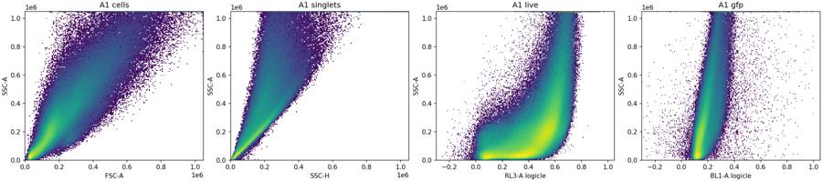
tool call · exec
text(await tools.exec_command({cmd:"tail -6 /task/outputs/diagnostics/explore.log\npython - <<'PY'\nimport pandas as pd,flowkit as fk,numpy as np\np=pd.read_csv('/task/outputs/diagnostics/initial_metrics.csv')\nprint(p[['well','total','time_max','median_rate','max_rate','end_5s_rate','max_gap','FSC-A_saturated_pct','SSC-A_saturated_pct','BL1-A_saturated_pct','RL3-A_saturated_pct']].round(3).to_string(index=False))\nl=fk.transforms.LogicleTransform(1048576,.5,4.5,0)\nprint(list(zip([0,100,300,500,1000,2000,3000,5000,10000,20000,50000,100000],l.apply(np.array([0,100,300,500,1000,2000,3000,5000,10000,20000,50000,100000])))))\nPY","max_output_tokens":4000}))
tool output
Script completed
Wall time 0.9 seconds
Output:
{"chunk_id":"d3788b","wall_time_seconds":0.751512241,"exit_code":0,"original_token_count":638,"output":"A7 848859 duration 97.92 median/s 8859.5\nA8 710140 duration 97.94 median/s 7383.5\nA9 958681 duration 97.82 median/s 9972.0\nA10 870505 duration 97.7 median/s 9119.5\nA11 844586 duration 97.92 median/s 8758.5\nA12 947510 duration 97.9 median/s 9862.0\nwell total time_max median_rate max_rate end_5s_rate max_gap FSC-A_saturated_pct SSC-A_saturated_pct BL1-A_saturated_pct RL3-A_saturated_pct\n A1 978726 46.250 21582.0 22801 19178.8 0.006 0.189 1.174 0.001 0.0\n A2 935707 97.949 9736.5 10799 8252.6 0.020 0.072 0.500 0.002 0.0\n A3 925910 97.658 9740.5 10654 7542.2 0.033 0.048 0.467 0.002 0.0\n A4 892332 97.738 9275.5 10070 8286.8 0.020 0.075 0.531 0.007 0.0\n A5 986514 97.871 10281.0 11297 9073.2 0.053 0.075 0.612 0.010 0.0\n A6 755396 97.106 7922.5 8592 6886.2 0.043 0.032 0.348 0.011 0.0\n A7 848859 97.919 8859.5 9594 7731.4 0.035 0.089 0.534 0.003 0.0\n A8 710140 97.939 7383.5 7962 6484.6 0.025 0.068 0.441 0.005 0.0\n A9 958681 97.821 9972.0 10923 8818.0 0.053 0.319 1.084 0.002 0.0\n A10 870505 97.699 9119.5 10137 6797.6 0.048 0.137 0.632 0.003 0.0\n A11 844586 97.924 8758.5 9747 8157.4 0.044 0.043 0.379 0.008 0.0\n A12 947510 97.898 9862.0 11012 7413.8 0.020 0.093 0.546 0.011 0.0\n[(0, 0.1111111111111111), (100, 0.13894579613572952), (300, 0.19063765827359397), (500, 0.23329305284090643), (1000, 0.30530839408038085), (2000, 0.3810191860365646), (3000, 0.42426769656664776), (5000, 0.477343264142555), (10000, 0.5474038754790412), (20000, 0.6160234364411775), (50000, 0.7055567743220574), (100000, 0.7728374933059419)]\n"}tool call · exec
text(await tools.apply_patch("*** Begin Patch\n*** Add File: /task/outputs/inspect_representatives.py\n+from pathlib import Path\n+import sys\n+import numpy as np\n+import pandas as pd\n+import flowkit as fk\n+import matplotlib\n+matplotlib.use('Agg')\n+import matplotlib.pyplot as plt\n+from matplotlib.colors import LogNorm\n+from scipy.ndimage import gaussian_filter1d\n+\n+out=Path('/task/outputs/plots')\n+lg=fk.transforms.LogicleTransform(1048576,.5,4.5,0)\n+ticks=np.array([0,100,1000,10000,100000,1000000])\n+for well in sys.argv[1:]:\n+ s=fk.Sample(f'/task/inputs/raw/Serotype panel_2_Rep2_Group_{well}.fcs',subsample=10**12)\n+ e=s.get_events(source='raw',subsample=False)\n+ x={p:e[:,s.get_channel_index(p)] for p in ['Time','FSC-A','SSC-A','SSC-H','RL3-A','BL1-A']}\n+ f,a,h,z,g=[x[p] for p in ['FSC-A','SSC-A','SSC-H','RL3-A','BL1-A']]\n+ broad=(f>65000)&(a>50000)&(f<1000000)&(a<1000000)\n+ single=broad&(a/h>0.9)&(a/h<1.85)\n+ live=single&(z<3000)\n+ fig,axs=plt.subplots(2,4,figsize=(19,9),layout='constrained')\n+ def hist(ax,x,y,bins,xlab,ylab):\n+ ax.hist2d(x,y,bins=bins,norm=LogNorm(),cmap='viridis')\n+ ax.set_xlabel(xlab);ax.set_ylabel(ylab)\n+ hist(axs[0,0],f,a,[np.linspace(0,500000,251),np.linspace(0,700000,251)],'FSC-A','SSC-A')\n+ hist(axs[0,1],lg.apply(f),lg.apply(a),[np.linspace(.4,1.01,251),np.linspace(.3,1.01,251)],'FSC-A logicle','SSC-A logicle')\n+ hist(axs[0,2],h[broad],a[broad],[np.linspace(0,700000,251),np.linspace(0,1000000,251)],'SSC-H (broad cell mask)','SSC-A')\n+ hist(axs[0,3],a[broad],a[broad]/h[broad],[np.linspace(0,1000000,251),np.linspace(.5,4,251)],'SSC-A','SSC-A / SSC-H')\n+ hist(axs[1,0],lg.apply(z[single]),a[single],[np.linspace(-.2,1.05,251),np.linspace(0,1000000,251)],'RL3-A, provisional singlets','SSC-A')\n+ hist(axs[1,1],lg.apply(g[live]),a[live],[np.linspace(-.2,1.05,251),np.linspace(0,1000000,251)],'BL1-A, provisional live (<3000)','SSC-A')\n+ for ax,vals,title in [(axs[1,2],z[single],'Zombie on provisional singlets'),(axs[1,3],g[live],'GFP on provisional live')]:\n+ counts,b=np.histogram(lg.apply(vals),bins=np.linspace(-.2,1.05,301))\n+ ax.stairs(counts,b);ax.plot((b[:-1]+b[1:])/2,gaussian_filter1d(counts.astype(float),2))\n+ ax.set_title(title);ax.set_xticks(lg.apply(ticks),[str(v) for v in ticks]);ax.set_xlim(-.2,1.05)\n+ ax.set_xlabel('Raw fluorescence (logicle display)');ax.set_ylabel('Events / logicle bin')\n+ fig.suptitle(f'{well}: full events; rectangular cell and ratio masks for exploration only')\n+ fig.savefig(out/f'explore_detail_{well}.png',dpi=140)\n+ plt.close(fig)\n+ print(well,'total',len(e),'broad',broad.sum(),'singlet',single.sum(),'live',live.sum(),flush=True)\n*** End Patch"))
text(await tools.exec_command({cmd:"OPENBLAS_NUM_THREADS=1 python /task/outputs/inspect_representatives.py A1 B1 C1 D1 > /task/outputs/diagnostics/representatives.log 2>&1","yield_time_ms":1000,"max_output_tokens":2000}))
text(await tools.exec_command({cmd:"tail -8 /task/outputs/diagnostics/explore.log","max_output_tokens":2000}))
tool output
Script completed
Wall time 1.2 seconds
Output:
{}
{"chunk_id":"eac1c7","wall_time_seconds":1.001301321,"session_id":55263,"original_token_count":0,"output":""}
{"chunk_id":"5d9fe0","wall_time_seconds":0.000003555,"exit_code":0,"original_token_count":84,"output":"B10 1083648 duration 97.78 median/s 11387.5\nB11 988574 duration 97.92 median/s 10319.5\nB12 904103 duration 97.78 median/s 9363.5\nC1 624718 duration 97.76 median/s 6455.0\nC2 695572 duration 97.79 median/s 7300.5\nC3 656321 duration 97.72 median/s 6958.5\nC4 679504 duration 97.8 median/s 7161.5\nC5 689593 duration 97.86 median/s 7139.0\n"}10
agent
Most wells inspected so far run for about 98 seconds with stable event rates. A1 has a shorter, faster acquisition; I’ll check its instrument settings before treating that as a problem. Next I’ll examine fluorescence within candidate singlets, since debris can obscure the live/dead separation.
tool call · exec
text(await tools.exec_command({cmd:"tail -5 /task/outputs/diagnostics/representatives.log\n tail -5 /task/outputs/diagnostics/explore.log","max_output_tokens":2000}))
image((await tools.view_image({path:"/task/outputs/plots/explore_detail_A1.png"})).image_url)
tool output
Script completed Wall time 0.1 seconds Output:
{"chunk_id":"82e6d7","wall_time_seconds":0.000003506,"exit_code":0,"original_token_count":127,"output":"A1 total 978726 broad 712368 singlet 566229 live 178941\n/task/outputs/inspect_representatives.py:21: RuntimeWarning: divide by zero encountered in divide\n single=broad&(a/h>0.9)&(a/h<1.85)\nB1 total 733754 broad 467961 singlet 409164 live 115513\nC1 total 624718 broad 399659 singlet 371508 live 51462\nC4 679504 duration 97.8 median/s 7161.5\nC5 689593 duration 97.86 median/s 7139.0\nC6 891011 duration 97.57 median/s 9315.5\nC7 649735 duration 97.91 median/s 6684.0\nC8 639518 duration 97.87 median/s 6619.0\n"}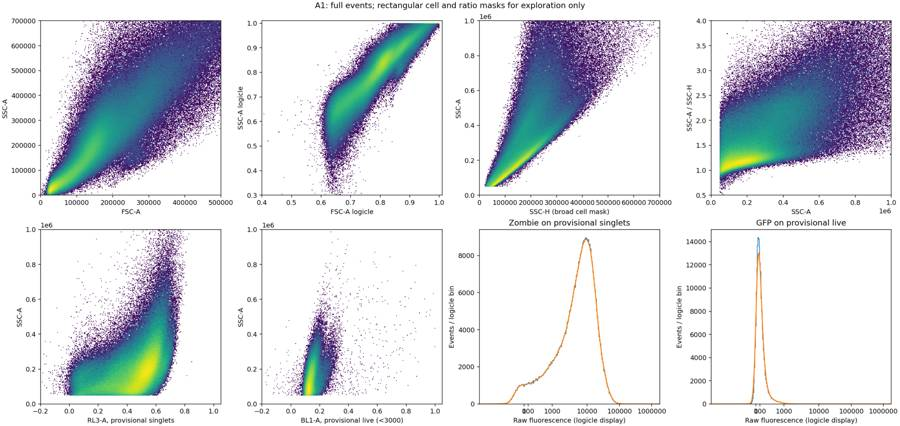
tool call · exec
const rr=await Promise.allSettled(["B1","C1","D1"].map(w=>tools.view_image({path:`/task/outputs/plots/explore_detail_${w}.png`}))); for(const r of rr){if(r.status==="fulfilled") image(r.value.image_url);else text(r.reason)}
text(await tools.exec_command({cmd:"tail -6 /task/outputs/diagnostics/explore.log\ncat /task/outputs/diagnostics/representatives.log","max_output_tokens":2000}))
tool output
Script completed Wall time 0.1 seconds Output:
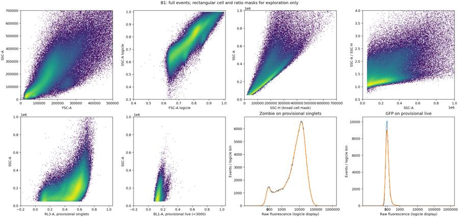
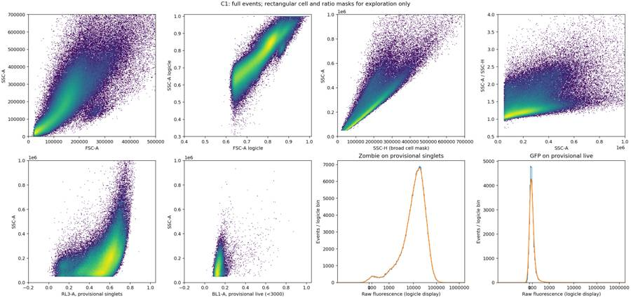
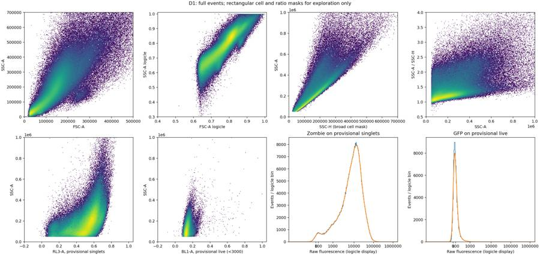
{"chunk_id":"598efd","wall_time_seconds":0.000003305,"exit_code":0,"original_token_count":219,"output":"C7 649735 duration 97.91 median/s 6684.0\nC8 639518 duration 97.87 median/s 6619.0\nC9 801299 duration 97.9 median/s 8286.5\nC10 927162 duration 97.48 median/s 9775.5\nC11 868685 duration 97.54 median/s 9036.5\nC12 578214 duration 97.76 median/s 6044.0\n/task/outputs/inspect_representatives.py:21: RuntimeWarning: divide by zero encountered in divide\n single=broad&(a/h>0.9)&(a/h<1.85)\nA1 total 978726 broad 712368 singlet 566229 live 178941\n/task/outputs/inspect_representatives.py:21: RuntimeWarning: divide by zero encountered in divide\n single=broad&(a/h>0.9)&(a/h<1.85)\nB1 total 733754 broad 467961 singlet 409164 live 115513\nC1 total 624718 broad 399659 singlet 371508 live 51462\n/task/outputs/inspect_representatives.py:21: RuntimeWarning: divide by zero encountered in divide\n single=broad&(a/h>0.9)&(a/h<1.85)\nD1 total 800840 broad 527466 singlet 475233 live 103383\n"}tool call · exec
text(await tools.exec_command({cmd:"tail -8 /task/outputs/diagnostics/explore.log\npython - <<'PY'\nimport pandas as pd\np=pd.read_csv('/task/outputs/diagnostics/initial_metrics.csv')\nprint(p[['well','total','time_max','median_rate','max_rate','end_5s_rate','max_gap','FSC-A_saturated_pct','SSC-A_saturated_pct','BL1-A_saturated_pct','RL3-A_saturated_pct','flowrate','coincident_count']].round(3).to_string(index=False))\nPY","max_output_tokens":5500}))
tool output
Script completed
Wall time 0.3 seconds
Output:
{"chunk_id":"bd11d7","wall_time_seconds":0.108989586,"exit_code":0,"original_token_count":2018,"output":"C11 868685 duration 97.54 median/s 9036.5\nC12 578214 duration 97.76 median/s 6044.0\nD1 800840 duration 97.94 median/s 8314.5\nD2 894591 duration 97.93 median/s 9291.5\nD3 915097 duration 97.74 median/s 9441.5\nD4 925805 duration 97.53 median/s 9584.0\nD5 153195 duration 97.77 median/s 1598.0\nD6 726651 duration 97.93 median/s 7562.0\nwell total time_max median_rate max_rate end_5s_rate max_gap FSC-A_saturated_pct SSC-A_saturated_pct BL1-A_saturated_pct RL3-A_saturated_pct flowrate coincident_count\n A1 978726 46.250 21582.0 22801 19178.8 0.006 0.189 1.174 0.001 0.000 200 172519\n A2 935707 97.949 9736.5 10799 8252.6 0.020 0.072 0.500 0.002 0.000 100 96386\n A3 925910 97.658 9740.5 10654 7542.2 0.033 0.048 0.467 0.002 0.000 100 90279\n A4 892332 97.738 9275.5 10070 8286.8 0.020 0.075 0.531 0.007 0.000 100 89020\n A5 986514 97.871 10281.0 11297 9073.2 0.053 0.075 0.612 0.010 0.000 100 104344\n A6 755396 97.106 7922.5 8592 6886.2 0.043 0.032 0.348 0.011 0.000 100 61627\n A7 848859 97.919 8859.5 9594 7731.4 0.035 0.089 0.534 0.003 0.000 100 81744\n A8 710140 97.939 7383.5 7962 6484.6 0.025 0.068 0.441 0.005 0.000 100 56510\n A9 958681 97.821 9972.0 10923 8818.0 0.053 0.319 1.084 0.002 0.000 100 108852\n A10 870505 97.699 9119.5 10137 6797.6 0.048 0.137 0.632 0.003 0.000 100 86870\n A11 844586 97.924 8758.5 9747 8157.4 0.044 0.043 0.379 0.008 0.000 100 74178\n A12 947510 97.898 9862.0 11012 7413.8 0.020 0.093 0.546 0.011 0.000 100 94783\n B1 733754 97.937 7648.5 8350 7457.6 0.039 0.107 0.475 0.000 0.000 100 64948\n B2 728886 97.867 7527.5 8294 7257.4 0.026 0.132 0.533 0.000 0.000 100 64652\n B3 667298 97.940 6961.5 7468 6316.2 0.028 0.065 0.350 0.000 0.000 100 50572\n B4 598212 97.862 6292.0 6960 4140.6 0.037 0.045 0.315 0.000 0.000 100 40161\n B5 837561 97.905 8777.5 9646 6119.4 0.028 0.045 0.412 0.000 0.000 100 73351\n B6 877336 97.836 9077.5 10142 6054.6 0.025 0.052 0.475 0.000 0.000 100 79492\n B7 954909 97.900 10201.0 17476 8913.2 0.158 0.118 0.561 0.000 0.001 100 97979\n B8 918778 97.751 9979.0 15194 6996.4 0.068 0.042 0.373 0.000 0.000 100 91516\n B9 862070 97.962 8892.0 9855 8685.8 0.031 0.055 0.400 0.000 0.000 100 79481\n B10 1083648 97.779 11387.5 12541 7677.6 0.040 0.065 0.605 0.001 0.000 100 119109\n B11 988574 97.925 10319.5 11430 7468.4 0.022 0.035 0.438 0.004 0.000 100 98351\n B12 904103 97.779 9363.5 10284 8852.2 0.047 0.029 0.383 0.012 0.000 100 84211\n C1 624718 97.765 6455.0 7068 6235.2 0.041 0.005 0.151 0.000 0.000 100 38396\n C2 695572 97.790 7300.5 7898 4617.2 0.021 0.010 0.196 0.000 0.000 100 48657\n C3 656321 97.719 6958.5 7636 3590.8 0.023 0.040 0.285 0.000 0.000 100 47944\n C4 679504 97.801 7161.5 7826 4106.4 0.015 0.012 0.200 0.000 0.000 100 48064\n C5 689593 97.862 7139.0 7691 6914.2 0.044 0.008 0.185 0.002 0.001 100 47895\n C6 891011 97.567 9315.5 14018 6053.2 0.017
… [2,276 more characters not shown]tool call · exec
text(await tools.write_stdin({session_id:8239,chars:"","yield_time_ms":1000,"max_output_tokens":2000}))
image((await tools.view_image({path:"/task/outputs/plots/initial_time_all.png"})).image_url)
image((await tools.view_image({path:"/task/outputs/plots/initial_cells_2.png"})).image_url)
tool output
Script completed Wall time 0.1 seconds Output:
{"chunk_id":"3a0ae5","wall_time_seconds":0.000002324,"exit_code":0,"original_token_count":0,"output":""}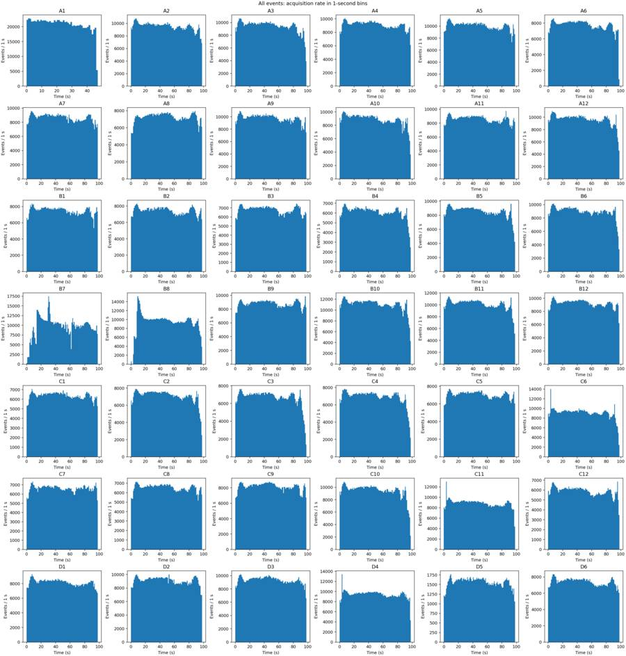
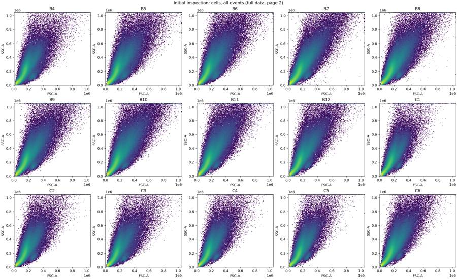
14
agent
B7 and B8 show low-flow starts followed by bursts; I’ll inspect their time-resolved scatter data before deciding whether to exclude them. D5 has fewer total events, but its rate is steady, so yield alone is not enough to reject it. The Zombie-dim population has only a shallow separation in some wells, which will need to be reflected in the gate notes.
tool call · exec
text(await tools.apply_patch("*** Begin Patch\n*** Add File: /task/outputs/gate_plate.py\n+\"\"\"Reproduce shared uncompensated FlowKit gates, full-event counts and diagnostics.\n+\n+Run: OPENBLAS_NUM_THREADS=1 python /task/outputs/gate_plate.py\n+All coordinates and thresholds are raw detector units. The logicle transform is\n+used only to display fluorescence; it is not needed for these raw-unit gates.\n+\"\"\"\n+from pathlib import Path\n+import gc, json, hashlib, importlib.metadata\n+import numpy as np\n+import pandas as pd\n+import flowkit as fk\n+from scipy.ndimage import gaussian_filter1d\n+\n+OUT=Path('/task/outputs')\n+RAW=Path('/task/inputs/raw')\n+LAYOUT=pd.read_csv('/task/inputs/plate_layout.csv',keep_default_na=False)\n+POPULATIONS=['Cells','Singlets','Live','GFP_pos']\n+PARENTS=['all_events','Cells','Singlets','Live']\n+CELLS=np.array([[60000,100000],[100000,40000],[200000,60000],\n+ [650000,300000],[1000000,700000],[1000000,1000000],\n+ [250000,1000000],[100000,400000]],dtype=float)\n+SINGLETS=np.array([[25000,20000],[100000,90000],[250000,280000],\n+ [500000,650000],[700000,1000000],[520000,1000000],\n+ [350000,650000],[200000,330000],[100000,150000],\n+ [25000,40000]],dtype=float)\n+LIVE_MAX=500.0\n+GFP_MIN=500.0\n+LG=fk.transforms.LogicleTransform(1048576,.5,4.5,0)\n+XB=np.linspace(0,1048576,257)\n+FB=np.linspace(-.2,1.05,501)\n+\n+def make_strategy():\n+ strategy=fk.GatingStrategy()\n+ def dim(name,**kwargs):\n+ return fk.Dimension(name,compensation_ref='uncompensated',**kwargs)\n+ strategy.add_gate(fk.gates.PolygonGate('Cells',[dim('FSC-A'),dim('SSC-A')],CELLS.tolist()),('root',))\n+ strategy.add_gate(fk.gates.PolygonGate('Singlets',[dim('SSC-H'),dim('SSC-A')],SINGLETS.tolist()),('root','Cells'))\n+ strategy.add_gate(fk.gates.RectangleGate('Live',[dim('RL3-A',range_max=LIVE_MAX)]),('root','Cells','Singlets'))\n+ strategy.add_gate(fk.gates.RectangleGate('GFP_pos',[dim('BL1-A',range_min=GFP_MIN)]),('root','Cells','Singlets','Live'))\n+ return strategy\n+\n+def intervals(mask,edges):\n+ idx=np.flatnonzero(mask)\n+ if not len(idx): return []\n+ groups=np.split(idx,np.flatnonzero(np.diff(idx)>1)+1)\n+ return [[float(edges[v[0]]),float(edges[v[-1]+1])] for v in groups]\n+\n+def run():\n+ (OUT/'diagnostics').mkdir(exist_ok=True,parents=True)\n+ strategy=make_strategy()\n+ with (OUT/'gates.xml').open('wb') as fh: fk.export_gatingml(strategy,fh)\n+ saved=fk.parse_gating_xml(str(OUT/'gates.xml'))\n+ assert saved.get_gate_ids()==strategy.get_gate_ids()\n+ assert len(saved.get_gate_ids())==4\n+ counts=[];metrics=[];time_rows=[]\n+ for row in LAYOUT.itertuples(index=False):\n+ path=RAW/row.file\n+ # A deliberately over-large subsample parameter retains every event even\n+ # in FlowKit's optional plotting index. All accesses below explicitly use\n+ # subsample=False; strategy.gate_sample also gates the complete array.\n+ s=fk.Sample(str(path),subsample=10**12)\n+ e=s.get_events(source='raw',subsample=False)\n+ assert len(e)==s.event_count\n+ assert s.compensation is None\n+ ix={p:s.get_channel_index(p) for p in s.pnn_labels}\n+ metadata=s.get_metadata()\n+ assert metadata['wellid']==row.well\n+ result=saved.gate_sample(s)\n+ original=strategy.gate_sample(s)\n+ masks={pop:result.get_gate_membership(pop) for pop in POPULATIONS}\n+ for p in POPULATIONS:\n+ assert np.array_equal(masks[p],original.get_gate_membership(p))\n+ prior=np.ones(s.event_count,dtype=bool)\n+ for pop,parent in zip(POPULATIONS,PARENTS):\n+ mask=masks[pop]\n+ assert not np.any(mask & ~prior)\n+ n=int(result.get_gate_count(pop))\n+ assert n==int(mask.sum())\n+ pct=100*n/int(prior.sum()) if prior.sum() else 0.0\n+ counts.append(dict(file=row.file,well=row.well,population=pop,count=n,parent_population=parent,pct_of_parent=pct))\n+ prior=mask\n+ pd.DataFrame(counts).to_csv(OUT/'counts.csv',index=False)\n+\n+ t=e[:,ix['Time']]\n+ edges=np.arange(0,np.ceil(t.max())+1,1.)\n+ duration=np.minimum(edges[1:],t.max())-np.maximum(edges[:-1],t.min())\n+ duration=np.maximum(duration,0)\n+ time_counts=np.histogram(t,edges)[0]\n+ rates=np.divide(time_counts,duration,out=np.zeros(len(duration)),where=duration>0)\n+ complete=duration>.999\n+ centers=(edges[1:]+edges[:-1])/2\n+ reference=(centers>=10)&(centers<=min(80,t.max()-5))&complete\n+ baseline=float(np.median(rates[reference]))\n+ low=(rates<.5*baseline)&complete\n+ severe=(rates<.2*baseline)&complete\n+ burst=(rates>1.5*baseline)&complete\n+ rec=dict(file=row.file,well=row.well,total_events=s.event_count,\n+ **{p:int(masks[p].sum()) for p in POPULATIONS},\n+ first_event_s=float(t.min()),last_event_s=float(t.max()),\n+ baseline_rate=baseline,end_5s_rate=float(np.sum(t>=t.max()-5)/5),\n+ first_10s_rate=float(np.sum(t<10)/10),last_complete_1s_rate=float(rates[complete][-1]),\n+ min_full_second_rate=float(rates[complete].min()),max_full_second_rate=float(rates[complete].max()),\n+ low_half_baseline_intervals=intervals(low,edges),low_fifth_baseline_intervals=intervals(severe,edges),\n+ burst_intervals=intervals(burst,edges),\n+ max_gap_s=float(np.max(np.diff(t))),max_gap_starts_s=float(t[np.argmax(np.diff(t))]),\n+ nonfinite_values=int(np.sum(~np.isfinite(e))),time_reversals=int(np.sum(np.diff(t)<0)),\n+ flow_setting=metadata['#flowrate'],coincident_count=int(metadata['#coincidentcount']),\n+ lost=int(metadata['lost']),metadata_begin=metadata['btim'],metadat
… [4,289 more characters not shown]tool output
Script completed
Wall time 1.2 seconds
Output:
{}
{"chunk_id":"733845","wall_time_seconds":1.000892828,"session_id":85401,"original_token_count":0,"output":""}tool call · exec
text(await tools.exec_command({cmd:"tail -4 /task/outputs/diagnostics/gating.log\npython - <<'PY'\nimport json\nfrom pathlib import Path\np=Path('/task/outputs/diagnostics/metrics.json')\nif p.exists():\n m=json.loads(p.read_text())\n for r in m:\n print(r['well'], 'live',r['Live'],'GFP',r['GFP_pos'],'GFP%',round(r['GFP_pos']/r['Live']*100,3),'qGFP',r['Live_BL1-A_quantiles'],'low',r['low_half_baseline_intervals'])\nPY","max_output_tokens":4500}))
image((await tools.view_image({path:"/task/outputs/plots/initial_cells_1.png"})).image_url)
image((await tools.view_image({path:"/task/outputs/plots/initial_cells_3.png"})).image_url)
tool output
Script completed Wall time 0.1 seconds Output:
{"chunk_id":"ee5f5f","wall_time_seconds":0.000003535,"exit_code":0,"original_token_count":607,"output":"A9 {'Cells': 613708, 'Singlets': 474859, 'Live': 37007, 'GFP_pos': 305}\nA10 {'Cells': 574791, 'Singlets': 462061, 'Live': 30174, 'GFP_pos': 333}\nA11 {'Cells': 542396, 'Singlets': 450839, 'Live': 34418, 'GFP_pos': 590}\nA12 {'Cells': 616041, 'Singlets': 500173, 'Live': 34896, 'GFP_pos': 852}\nA1 live 42381 GFP 631 GFP% 1.489 qGFP {'q01': -62.0, 'q10': -1.0, 'q50': 78.0, 'q90': 209.0, 'q95': 277.0, 'q99': 605.3999999999942, 'q999': 17883.12000000177} low []\nA2 live 28224 GFP 448 GFP% 1.587 qGFP {'q01': -52.0, 'q10': 8.0, 'q50': 92.0, 'q90': 218.0, 'q95': 282.0, 'q99': 726.0, 'q999': 214956.04999998998} low []\nA3 live 32396 GFP 699 GFP% 2.158 qGFP {'q01': -52.0, 'q10': 6.0, 'q50': 89.0, 'q90': 228.0, 'q95': 317.0, 'q99': 871.0, 'q999': 85985.42999999339} low []\nA4 live 27053 GFP 623 GFP% 2.303 qGFP {'q01': -51.0, 'q10': 12.0, 'q50': 98.0, 'q90': 239.0, 'q95': 329.0, 'q99': 1123.4399999999987, 'q999': 289870.70800000435} low []\nA5 live 29963 GFP 828 GFP% 2.763 qGFP {'q01': -56.0, 'q10': 8.0, 'q50': 94.0, 'q90': 258.0, 'q95': 374.0, 'q99': 1206.3600000000224, 'q999': 431140.5200000047} low []\nA6 live 20784 GFP 692 GFP% 3.329 qGFP {'q01': -49.0, 'q10': 17.0, 'q50': 104.0, 'q90': 275.0, 'q95': 404.0, 'q99': 1737.5299999999843, 'q999': 698348.4640000368} low []\nA7 live 26310 GFP 314 GFP% 1.193 qGFP {'q01': -50.0, 'q10': 5.0, 'q50': 84.0, 'q90': 194.0, 'q95': 247.0, 'q99': 563.8199999999997, 'q999': 49315.96599999776} low []\nA8 live 24927 GFP 385 GFP% 1.545 qGFP {'q01': -52.0, 'q10': 7.0, 'q50': 87.0, 'q90': 205.0, 'q95': 268.0, 'q99': 787.1799999999857, 'q999': 255446.51800000342} low []\nA9 live 37007 GFP 305 GFP% 0.824 qGFP {'q01': -57.0, 'q10': 3.0, 'q50': 80.0, 'q90': 191.0, 'q95': 242.0, 'q99': 458.9400000000023, 'q999': 33531.24999999251} low []\nA10 live 30174 GFP 333 GFP% 1.104 qGFP {'q01': -53.0, 'q10': 6.0, 'q50': 87.0, 'q90': 204.0, 'q95': 258.34999999999854, 'q99': 532.0, 'q999': 94304.52400000092} low []\nA11 live 34418 GFP 590 GFP% 1.714 qGFP {'q01': -57.0, 'q10': 6.0, 'q50': 90.0, 'q90': 220.0, 'q95': 295.0, 'q99': 718.0, 'q999': 447249.8469999805} low []\nA12 live 34896 GFP 852 GFP% 2.442 qGFP {'q01': -61.0, 'q10': 2.0, 'q50': 85.0, 'q90': 231.0, 'q95': 323.0, 'q99': 1531.100000000064, 'q999': 795781.5250000436} low []\nB1 live 32408 GFP 85 GFP% 0.262 qGFP {'q01': -56.0, 'q10': -2.0, 'q50': 73.0, 'q90': 173.0, 'q95': 211.0, 'q99': 340.9300000000003, 'q999': 719.5930000000008} low []\n"}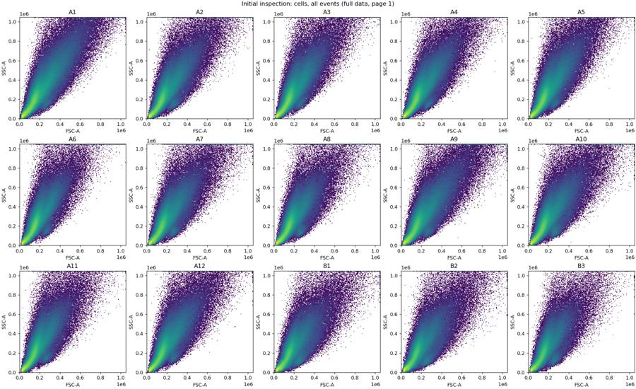
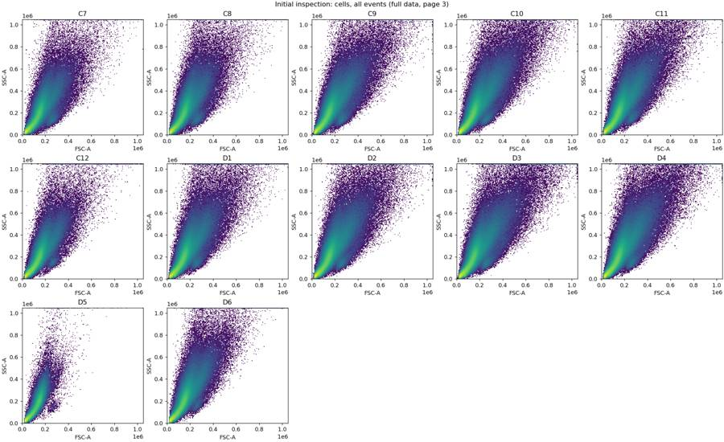
tool call · exec
text(await tools.clock__curr_time({}))
text(await tools.exec_command({cmd:"python - <<'PY'\nimport numpy as np\nfrom scipy.ndimage import gaussian_filter1d\nfrom scipy.signal import find_peaks\nimport flowkit as fk\nfrom pathlib import Path\nlg=fk.transforms.LogicleTransform(1048576,.5,4.5,0)\nfor p in Path('/task/outputs/diagnostics').glob('gated_*.npz'):\n d=np.load(p); x=(d['fb'][1:]+d['fb'][:-1])/2; h=gaussian_filter1d(d['live_1d'].astype(float),3)\n peaks=find_peaks(h,prominence=h.max()*.005)[0]\n valleys=find_peaks(-h,prominence=h.max()*.002)[0]\n print(p.stem, 'modes',np.round(lg.inverse(x[peaks]),1),'valleys',np.round(lg.inverse(x[valleys]),1))\nPY","max_output_tokens":3000}))
tool output
Script completed
Wall time 1.0 seconds
Output:
{"current_time":"2026-11-10 17:13:42 UTC"}
{"chunk_id":"42893d","wall_time_seconds":0.870135623,"exit_code":0,"original_token_count":223,"output":"gated_A9 modes [ 90.2 14785.8] valleys [202.]\ngated_B4 modes [ 145.2 15164.6] valleys [402.7]\ngated_B6 modes [ 90.2 9402.8] valleys [163.9]\ngated_B7 modes [14057.] valleys [261.2]\ngated_B2 modes [ 54.1 17654.8] valleys [379.5]\ngated_B3 modes [ 81.2 19052.4] valleys [323.9]\ngated_B5 modes [ 99.3 10656.8] valleys [211.7]\ngated_B1 modes [ 63.1 13032. ] valleys [281.7 402.7]\ngated_A5 modes [ 81.2 7515.1] valleys [356.8]\ngated_A8 modes [ 117.5 13706.5] valleys [368.1]\ngated_A7 modes [ 45.2 16361.5] valleys [302.6]\ngated_A1 modes [9640.9] valleys []\ngated_A6 modes [ 81.2 9640.9] valleys [356.8]\ngated_A12 modes [7515.1] valleys []\ngated_A10 modes [ 108.4 12391.5] valleys [379.5]\ngated_A11 modes [ 117.5 10135.8] valleys [281.7]\ngated_A4 modes [ 81.2 10656.8] valleys [402.7]\ngated_A3 modes [ 90.2 9170.8] valleys [302.6]\ngated_A2 modes [ 54.1 9170.8] valleys [476.4]\n"}tool call · exec
text(await tools.apply_patch("*** Begin Patch\n*** Add File: /task/outputs/plot_plate.py\n+from pathlib import Path\n+import json\n+import numpy as np\n+import pandas as pd\n+import matplotlib\n+matplotlib.use('Agg')\n+import matplotlib.pyplot as plt\n+from matplotlib.colors import LogNorm\n+from scipy.ndimage import gaussian_filter1d\n+from gate_plate import OUT, LAYOUT, CELLS, SINGLETS, LIVE_MAX, GFP_MIN, LG\n+\n+plt.rcParams.update({'font.size':9,'axes.titlesize':11,'axes.labelsize':9})\n+WELLS=LAYOUT.well.tolist()\n+metrics={r['well']:r for r in json.loads((OUT/'diagnostics'/'metrics.json').read_text())}\n+available=[w for w in WELLS if (OUT/'diagnostics'/f'gated_{w}.npz').exists()]\n+\n+def flticks(ax):\n+ vals=np.array([0,1000,10000,100000,1000000])\n+ ax.set_xticks(LG.apply(vals),['0','1k','10k','100k','1M'])\n+ ax.set_xlim(-.05,1.01)\n+\n+def scatter_atlases():\n+ for key,xlab,pop,parent,cut,poly in [('cells','FSC-A','Cells','all_events',None,CELLS),\n+ ('singlets','SSC-H','Singlets','Cells',None,SINGLETS),\n+ ('live','RL3-A (Zombie NIR)','Live','Singlets',LIVE_MAX,None),\n+ ('gfp','BL1-A (GFP)','GFP_pos','Live',GFP_MIN,None)]:\n+ for page in range(3):\n+ fig,axes=plt.subplots(3,5,figsize=(18,10.5))\n+ fig.subplots_adjust(wspace=.32,hspace=.48,top=.92,bottom=.07,left=.05,right=.98)\n+ page_wells=available[page*15:(page+1)*15]\n+ for ax,w in zip(axes.flat,page_wells):\n+ d=np.load(OUT/'diagnostics'/f'gated_{w}.npz')\n+ bins=d['xb'] if poly is not None else d['fb']\n+ im=ax.pcolormesh(bins,d['xb']/1000,d[key].T,norm=LogNorm(vmin=1),cmap='viridis',rasterized=True)\n+ if poly is not None:\n+ p=np.vstack([poly,poly[0]])\n+ # Convert the raw x axis to thousands for readable tick labels.\n+ ax.clear()\n+ ax.pcolormesh(bins/1000,d['xb']/1000,d[key].T,norm=LogNorm(vmin=1),cmap='viridis',rasterized=True)\n+ ax.plot(p[:,0]/1000,p[:,1]/1000,color='#ff4b37',lw=1.3)\n+ ax.set_xlim(0,1050);ax.set_xticks([0,500,1000])\n+ ax.set_xlabel(xlab+' (thousands)')\n+ else:\n+ ax.axvline(float(LG.apply(np.array([cut]))[0]),color='#ff4b37',lw=1.3)\n+ flticks(ax);ax.set_xlabel(xlab+'; logicle')\n+ ax.set_ylim(0,1050);ax.set_yticks([0,500,1000]);ax.set_ylabel('SSC-A (thousands)')\n+ r=metrics[w]; n=r[pop]; par=r['total_events'] if parent=='all_events' else r[parent]\n+ ax.set_title(f'{w} | {pop} {n:,} ({100*n/par:.1f}%)')\n+ for ax in axes.flat[len(page_wells):]:ax.axis('off')\n+ fig.suptitle(f'{pop} gate on {parent}: all parent events, shared gate (red), page {page+1}',fontsize=15)\n+ fig.savefig(OUT/'plots'/f'{key}_gates_{page+1}.png',dpi=150)\n+ plt.close(fig)\n+\n+def histogram_atlas():\n+ for channel,cut in [('live',LIVE_MAX),('gfp',GFP_MIN)]:\n+ fig,axes=plt.subplots(7,6,figsize=(21,22))\n+ fig.subplots_adjust(wspace=.32,hspace=.55,top=.95,bottom=.04,left=.045,right=.985)\n+ for ax,w in zip(axes.flat,available):\n+ d=np.load(OUT/'diagnostics'/f'gated_{w}.npz')\n+ h=d[channel+'_1d']; b=d['fb']; x=(b[1:]+b[:-1])/2\n+ ax.stairs(h,b,color='#157eab',alpha=.6)\n+ ax.plot(x,gaussian_filter1d(h.astype(float),3),color='#002d46',lw=1.1)\n+ ax.axvline(LG.apply(np.array([cut]))[0],color='#d22c32')\n+ vals=np.array([0,500,3000,20000,100000])\n+ ax.set_xticks(LG.apply(vals),['0','500','3k','20k','100k'])\n+ ax.set_xlim(-.05,.8)\n+ ax.set_yscale('log');ax.set_ylim(.8,max(5,h.max()*1.2))\n+ ax.set_title(w);ax.set_xlabel('Raw intensity (logicle)');ax.set_ylabel('Events / bin')\n+ fig.suptitle(('Zombie NIR on Singlets' if channel=='live' else 'GFP on Live')+'; full events; red = shared boundary',fontsize=16)\n+ fig.savefig(OUT/'plots'/f'{channel}_histograms_all.png',dpi=145)\n+ plt.close(fig)\n+\n+def boundaries():\n+ for channel,wells,cut in [('live',['A2','B2','B4','C1','C7','D1'],LIVE_MAX),\n+ ('gfp',['B1','B2','B3','B4','B5','B6'],GFP_MIN)]:\n+ fig,axes=plt.subplots(2,3,figsize=(15,9))\n+ fig.subplots_adjust(hspace=.38,wspace=.3,top=.91,bottom=.08,left=.07,right=.98)\n+ for ax,w in zip(axes.flat,wells):\n+ d=np.load(OUT/'diagnostics'/f'gated_{w}.npz');h=d[channel+'_1d'];b=d['fb'];x=(b[1:]+b[:-1])/2\n+ ax.stairs(h,b,color='#157eab',alpha=.6)\n+ ax.plot(x,gaussian_filter1d(h.astype(float),3),color='#002d46',lw=1.5)\n+ ax.axvline(LG.apply(np.array([cut]))[0],color='#d22c32',lw=1.5,label=f'Cut-off {cut:g}')\n+ vals=np.array([-100,0,300,1000,3000,10000,30000]) if channel=='live' else np.array([-100,0,300,1000,3000])\n+ ax.set_xticks(LG.apply(vals),[str(v) for v in vals],rotation=35)\n+ ax.set_xlim(LG.apply(np.array([-250]))[0],LG.apply(np.array([50000 if channel=='live' else 5000]))[0])\n+ if channel=='live':\n+ low=h[(x>0)&(x<.3)]\n+ ax.set_ylim(0,max(low)*2.8)\n+ ax.text(.02,.97,'Dead peak extends above plot',va='top',transform=ax.transAxes,fontsize=8)\n+ else:\n+ ax.set_yscale('log');ax.set_ylim(.8,max(5,h.max()*1.2))\n+ ax.set_xlabel('Raw detector units (logicle display)');ax.set_ylabel('Events / bin')\n+ ax.set_title(w);ax.legend(loc='upper right')\n+ fig.suptitle(('Live boundary: Zombie NIR on Singlets; enlarged dim/valley region' if channel=='live' else 'GFP boundary: Live populations in wells with few GFP-bright events'),fontsize=14)\n+ fig.savefig(OUT/'plots'/f'{channel}_boundary_
… [2,400 more characters not shown]tool output
Script completed
Wall time 0.0 seconds
Output:
{}
{"chunk_id":"3bdff2","wall_time_seconds":0.000002814,"exit_code":0,"original_token_count":71,"output":"D3 {'Cells': 573695, 'Singlets': 460218, 'Live': 27604, 'GFP_pos': 257}\nD4 {'Cells': 597170, 'Singlets': 485691, 'Live': 22177, 'GFP_pos': 274}\nD5 {'Cells': 92060, 'Singlets': 88905, 'Live': 2205, 'GFP_pos': 36}\nD6 {'Cells': 454386, 'Singlets': 394145, 'Live': 8611, 'GFP_pos': 172}\n"}tool call · exec
text(await tools.exec_command({cmd:"OPENBLAS_NUM_THREADS=1 python /task/outputs/plot_plate.py > /task/outputs/diagnostics/plots.log 2>&1","yield_time_ms":1000,"max_output_tokens":2000}))
text(await tools.exec_command({cmd:"python - <<'PY'\nimport json, pandas as pd,numpy as np,flowkit as fk\nfrom scipy.signal import find_peaks\nfrom scipy.ndimage import gaussian_filter1d\nm=json.load(open('/task/outputs/diagnostics/metrics.json'))\nlg=fk.transforms.LogicleTransform(1048576,.5,4.5,0)\nfor r in m:\n d=np.load('/task/outputs/diagnostics/gated_'+r['well']+'.npz'); x=(d['fb'][1:]+d['fb'][:-1])/2; h=gaussian_filter1d(d['live_1d'].astype(float),3)\n valleys=find_peaks(-h,prominence=h.max()*.002)[0]\n print(r['well'],'Live',r['Live'],'GFP',r['GFP_pos'],'GFP%',round(100*r['GFP_pos']/r['Live'],3),'valley',np.round(lg.inverse(x[valleys]),0),'low',r['low_half_baseline_intervals'],'bursts',r['burst_intervals'])\nPY","max_output_tokens":5500}))
tool output
Script completed
Wall time 2.1 seconds
Output:
{"chunk_id":"40df77","wall_time_seconds":1.000240067,"session_id":15282,"original_token_count":0,"output":""}
{"chunk_id":"640a75","wall_time_seconds":0.793043987,"exit_code":0,"original_token_count":698,"output":"A1 Live 42381 GFP 631 GFP% 1.489 valley [] low [] bursts []\nA2 Live 28224 GFP 448 GFP% 1.587 valley [476.] low [] bursts []\nA3 Live 32396 GFP 699 GFP% 2.158 valley [303.] low [] bursts []\nA4 Live 27053 GFP 623 GFP% 2.303 valley [403.] low [] bursts []\nA5 Live 29963 GFP 828 GFP% 2.763 valley [357.] low [] bursts []\nA6 Live 20784 GFP 692 GFP% 3.329 valley [357.] low [] bursts []\nA7 Live 26310 GFP 314 GFP% 1.193 valley [303.] low [] bursts []\nA8 Live 24927 GFP 385 GFP% 1.545 valley [368.] low [] bursts []\nA9 Live 37007 GFP 305 GFP% 0.824 valley [202.] low [] bursts []\nA10 Live 30174 GFP 333 GFP% 1.104 valley [379.] low [] bursts []\nA11 Live 34418 GFP 590 GFP% 1.714 valley [282.] low [] bursts []\nA12 Live 34896 GFP 852 GFP% 2.442 valley [] low [] bursts []\nB1 Live 32408 GFP 85 GFP% 0.262 valley [282. 403.] low [] bursts []\nB2 Live 29676 GFP 135 GFP% 0.455 valley [379.] low [] bursts []\nB3 Live 19843 GFP 319 GFP% 1.608 valley [324.] low [] bursts []\nB4 Live 23771 GFP 231 GFP% 0.972 valley [403.] low [] bursts []\nB5 Live 37561 GFP 536 GFP% 1.427 valley [212.] low [] bursts []\nB6 Live 44281 GFP 570 GFP% 1.287 valley [164.] low [] bursts []\nB7 Live 17793 GFP 412 GFP% 2.316 valley [261.] low [[1.0, 4.0], [6.0, 7.0], [13.0, 14.0], [61.0, 62.0]] bursts [[30.0, 32.0]]\nB8 Live 19452 GFP 597 GFP% 3.069 valley [241.] low [[1.0, 4.0]] bursts [[9.0, 10.0]]\nB9 Live 20518 GFP 556 GFP% 2.71 valley [271.] low [] bursts []\nB10 Live 22515 GFP 740 GFP% 3.287 valley [] low [] bursts []\nB11 Live 22024 GFP 1122 GFP% 5.094 valley [] low [] bursts []\nB12 Live 18092 GFP 1098 GFP% 6.069 valley [335.] low [] bursts []\nC1 Live 9017 GFP 265 GFP% 2.939 valley [391.] low [] bursts []\nC2 Live 13254 GFP 443 GFP% 3.342 valley [335.] low [] bursts []\nC3 Live 16603 GFP 259 GFP% 1.56 valley [379.] low [[96.0, 97.0]] bursts []\nC4 Live 13393 GFP 306 GFP% 2.285 valley [335.] low [[96.0, 97.0]] bursts []\nC5 Live 12190 GFP 302 GFP% 2.477 valley [357.] low [] bursts []\nC6 Live 14762 GFP 372 GFP% 2.52 valley [261.] low [] bursts []\nC7 Live 13075 GFP 305 GFP% 2.333 valley [476.] low [] bursts []\nC8 Live 14832 GFP 792 GFP% 5.34 valley [439.] low [] bursts []\nC9 Live 20400 GFP 621 GFP% 3.044 valley [335.] low [] bursts []\nC10 Live 22064 GFP 517 GFP% 2.343 valley [303.] low [] bursts []\nC11 Live 19015 GFP 415 GFP% 2.182 valley [379.] low [] bursts []\nC12 Live 11325 GFP 209 GFP% 1.845 valley [415.] low [] bursts []\nD1 Live 17832 GFP 220 GFP% 1.234 valley [271.] low [] bursts []\nD2 Live 21027 GFP 446 GFP% 2.121 valley [261.] low [] bursts []\nD3 Live 27604 GFP 257 GFP% 0.931 valley [241.] low [] bursts []\nD4 Live 22177 GFP 274 GFP% 1.236 valley [282.] low [] bursts []\nD5 Live 2205 GFP 36 GFP% 1.633 valley [ 357. 1131.] low [] bursts []\nD6 Live 8611 GFP 172 GFP% 1.997 valley [] low [] bursts []\n"}tool call · exec
text(await tools.exec_command({cmd:"tail -3 /task/outputs/diagnostics/plots.log\nls /task/outputs/plots/*boundary*","max_output_tokens":2000}))
image((await tools.view_image({path:"/task/outputs/plots/live_boundary_evidence.png"})).image_url)
image((await tools.view_image({path:"/task/outputs/plots/gfp_boundary_evidence.png"})).image_url)
tool output
Script failed
Wall time 0.0 seconds
Output:
{"chunk_id":"ca3147","wall_time_seconds":0.000002914,"exit_code":2,"original_token_count":20,"output":"ls: cannot access '/task/outputs/plots/*boundary*': No such file or directory\n"}
Script error:
unable to locate image at `/task/outputs/plots/live_boundary_evidence.png`: No such file or directory (os error 2)tool call · exec
text(await tools.exec_command({cmd:"python - <<'PY'\nimport pandas as pd,json\np=pd.read_csv('/task/outputs/diagnostics/time_bins.csv');m={r['well']:r for r in json.load(open('/task/outputs/diagnostics/metrics.json'))}\nfor w in ['B7','B8','B9','C6','C11','D4','C3','D5','A1']:\n d=p[p.well==w].copy();d['Cells_pct']=100*d.Cells/d.total_events;d['Singlets_pct']=100*d.Singlets/d.Cells;d['Live_pct']=100*d.Live/d.Singlets\n print('\\n',w,'baseline',m[w]['baseline_rate'])\n print(d.iloc[:16][['start_s','rate','median_FSC-A','median_SSC-A','Cells_pct','Singlets_pct','Live_pct']].round(1).to_string(index=False))\n print('last10',d.iloc[-10:][['start_s','rate','Cells_pct','Singlets_pct','Live_pct']].round(1).to_string(index=False))\nPY","max_output_tokens":8500}))
tool output
Script completed
Wall time 0.3 seconds
Output:
{"chunk_id":"9b2138","wall_time_seconds":0.164066033,"exit_code":0,"original_token_count":4382,"output":"\n B7 baseline 10456.0\n start_s rate median_FSC-A median_SSC-A Cells_pct Singlets_pct Live_pct\n 0.0 316.4 35636.5 34565.5 9.6 96.7 6.9\n 1.0 1784.0 115450.0 132960.0 67.0 94.5 4.3\n 2.0 1782.0 83480.0 84450.5 52.7 96.2 3.9\n 3.0 1821.0 74678.0 72923.0 48.0 92.6 3.7\n 4.0 5517.0 96402.0 108225.0 58.8 87.2 4.4\n 5.0 6581.0 91215.0 100905.0 56.8 89.3 4.6\n 6.0 4917.0 91404.0 107416.0 57.0 86.8 4.1\n 7.0 6822.0 93880.0 99159.5 56.6 89.6 3.8\n 8.0 8594.0 100087.0 115748.5 62.2 88.3 4.3\n 9.0 9558.0 104348.5 116827.5 63.6 86.8 4.5\n 10.0 8165.0 92885.0 104483.0 58.8 89.2 4.1\n 11.0 6766.0 85784.5 92008.0 54.6 92.7 2.7\n 12.0 5301.0 79592.0 89839.0 52.4 92.9 2.6\n 13.0 5149.0 61889.0 65718.0 41.1 92.1 2.9\n 14.0 13961.0 114082.0 146805.0 69.1 83.8 5.1\n 15.0 13981.0 110274.0 141388.0 68.4 84.8 4.7\nlast10 start_s rate Cells_pct Singlets_pct Live_pct\n 88.0 9548.0 63.1 80.9 3.7\n 89.0 9016.0 60.9 80.7 3.7\n 90.0 8948.0 59.9 80.4 3.4\n 91.0 9018.0 59.9 78.8 3.4\n 92.0 8687.0 61.9 78.3 3.6\n 93.0 8673.0 62.3 78.1 3.1\n 94.0 8729.0 64.1 79.9 3.2\n 95.0 8542.0 63.9 79.6 3.2\n 96.0 9976.0 64.4 78.5 3.3\n 97.0 8664.4 62.9 80.4 3.4\n\n B8 baseline 10039.0\n start_s rate median_FSC-A median_SSC-A Cells_pct Singlets_pct Live_pct\n 0.0 654.5 38126.5 36002.0 10.1 98.5 1.6\n 1.0 92.0 33562.0 30975.5 4.3 75.0 33.3\n 2.0 34.0 27806.5 29489.5 8.8 100.0 0.0\n 3.0 2202.0 75555.0 71359.5 48.5 93.6 2.6\n 4.0 6262.0 95674.0 98571.0 57.9 90.3 4.4\n 5.0 6101.0 97273.0 93086.0 56.4 88.5 4.2\n 6.0 5643.0 86504.0 83699.0 53.9 89.1 4.4\n 7.0 6008.0 83641.5 79741.0 52.4 91.5 3.3\n 8.0 11868.0 103062.5 110897.0 60.8 81.9 5.1\n 9.0 15194.0 96417.0 102069.0 58.4 79.8 5.1\n 10.0 14707.0 103605.0 118276.0 61.2 81.3 5.0\n 11.0 14229.0 107825.0 128859.0 64.2 83.3 4.2\n 12.0 13547.0 107595.0 126011.0 63.7 83.0 3.7\n 13.0 12266.0 105134.5 120196.5 62.7 84.7 3.9\n 14.0 11491.0 103681.0 115477.0 60.9 83.4 3.9\n 15.0 10976.0 102370.5 111623.5 61.1 82.9 3.8\nlast10 start_s rate Cells_pct Singlets_pct Live_pct\n 88.0 9059.0 59.2 82.9 4.4\n 89.0 9164.0 60.3 81.7 4.3\n 90.0 9581.0 62.3 81.0 4.4\n 91.0 9655.0 62.5 81.8 4.3\n 92.0 10247.0 63.5 79.2 4.9\n 93.0 8576.0 60.4 84.7 4.4\n 94.0 7417.0 59.4 86.6 4.8\n 95.0 6548.0 56.5 88.8 3.8\n 96.0 6179.0 54.5 89.3 4.1\n 97.0 5205.1 51.5 91.2 3.5\n\n B9 baseline 8854.0\n start_s rate median_FSC-A median_SSC-A Cells_pct Singlets_pct Live_pct\n 0.0 7557.8 107277.0 107364.0 62.7 87.7 5.1\n 1.0 7490.0 107048.5 108398.0 62.4 88.9 4.8\n 2.0 7485.0 103821.0 103108.0 60.7 88.1 4.5\n 3.0 8362.0 108032.5 110218.0 63.2 86.3 5.4\n 4.0 8791.0 110974.0 114858.0 63.7 85.9 5.4\n 5.0 9094.0 107615.5 111299.5 62.3 85.3 4.8\n 6.0 9277.0 104645.0 106835.0 61.6 84.7 4.8\n 7.0 9384.0 103292.5 105750.0 60.9 84.8 4.8\n 8.0 9383.0 103112.0 103591.0 60.6 83.8 4.1\n 9.0 9122.0 100334.0 101835.0 59.4 83.8 5.1\n 10.0 8862.0 102352.5 103445.0 59.8 84.5 4.9\n 11.0 8718.0 104423.5 106573.5 60.5 84.4 4.4\n 12.0 8632.0 105496.5 108296.5 61.4 83.8 4.8\n 13.0 8590.0 105646.5 108374.0 61.2 85.2 4.5\n 14.0 8477.0 105851.0 110249.0 61.1 83.5 5.1\n 15.0 8688.0 106736.0 111999.5 61.8 83.5 4.4\nlast10 start_s rate Cells_pct Singlets_pct Live_pct\n 88.0 9068.0 67.8 81.6 4.7\n 89.0 8938.0 66.4 81.5 4.5\n 90.0 8152.0 65.4 82.1 4.5\n 91.0 7661.0 64.2 83.6 4.7\n 92.0 7352.0 61.1 83.5 4.3\n 93.0 8005.0 61.6 82.7 4.0\n 94.0 8333.0 62.3 81.0 4.3\n 95.0 8625.0 63.7 81.6 4.0\n 96.0 9855.0
… [11,952 more characters not shown]21
agent
The first shared strategy and all 168 count rows are saved. I’m checking the final fluorescence thresholds and QC decisions, including terminal rate declines. The review uses one-second rates and population composition over time; partial final bins are corrected for their shorter duration.
tool call · exec
const r=await Promise.allSettled([
tools.exec_command({cmd:"tail -3 /task/outputs/diagnostics/plots.log\nls /task/outputs/plots/*boundary*","max_output_tokens":2000}),
tools.exec_command({cmd:"python - <<'PY'\nimport pandas as pd,json\np=pd.read_csv('/task/outputs/diagnostics/time_bins.csv');m={r['well']:r for r in json.load(open('/task/outputs/diagnostics/metrics.json'))}\nfor w,d in p.groupby('well',sort=False):\n baseline=m[w]['baseline_rate'];last=d.iloc[-1]\n ref=d[(d.start_s>=10)&(d.start_s<80)]\n print(w, 'last5/base',round(m[w]['end_5s_rate']/baseline,3),'lastbin/base',round(last.rate/baseline,3),'terminal SSC vs base',round(last['median_SSC-A']/ref['median_SSC-A'].median(),3),'Cell last/base',round((last.Cells/last.total_events)/(ref.Cells.sum()/ref.total_events.sum()),3))\nPY","max_output_tokens":4000})
]);r.forEach(text)
tool output
Script completed
Wall time 0.3 seconds
Output:
{"status":"fulfilled","value":{"chunk_id":"41819d","wall_time_seconds":0.000003205,"exit_code":0,"original_token_count":24,"output":"/task/outputs/plots/gfp_boundary_evidence.png\n/task/outputs/plots/live_boundary_evidence.png\n"}}
{"status":"fulfilled","value":{"chunk_id":"b10d2f","wall_time_seconds":0.130482501,"exit_code":0,"original_token_count":911,"output":"A1 last5/base 0.89 lastbin/base 0.998 terminal SSC vs base 1.022 Cell last/base 1.022\nA2 last5/base 0.846 lastbin/base 0.742 terminal SSC vs base 0.771 Cell last/base 0.892\nA3 last5/base 0.773 lastbin/base 0.607 terminal SSC vs base 0.729 Cell last/base 0.883\nA4 last5/base 0.887 lastbin/base 0.885 terminal SSC vs base 0.916 Cell last/base 0.972\nA5 last5/base 0.881 lastbin/base 0.969 terminal SSC vs base 0.992 Cell last/base 1.009\nA6 last5/base 0.86 lastbin/base 1.018 terminal SSC vs base 0.967 Cell last/base 0.999\nA7 last5/base 0.87 lastbin/base 0.951 terminal SSC vs base 0.891 Cell last/base 0.963\nA8 last5/base 0.876 lastbin/base 0.881 terminal SSC vs base 0.91 Cell last/base 0.986\nA9 last5/base 0.88 lastbin/base 0.91 terminal SSC vs base 0.924 Cell last/base 0.99\nA10 last5/base 0.735 lastbin/base 0.564 terminal SSC vs base 0.683 Cell last/base 0.851\nA11 last5/base 0.928 lastbin/base 1.008 terminal SSC vs base 0.993 Cell last/base 1.004\nA12 last5/base 0.749 lastbin/base 0.514 terminal SSC vs base 0.614 Cell last/base 0.814\nB1 last5/base 0.975 lastbin/base 1.03 terminal SSC vs base 0.896 Cell last/base 0.972\nB2 last5/base 0.966 lastbin/base 0.981 terminal SSC vs base 0.881 Cell last/base 0.962\nB3 last5/base 0.908 lastbin/base 0.978 terminal SSC vs base 0.939 Cell last/base 0.977\nB4 last5/base 0.656 lastbin/base 0.458 terminal SSC vs base 0.594 Cell last/base 0.794\nB5 last5/base 0.693 lastbin/base 0.528 terminal SSC vs base 0.617 Cell last/base 0.81\nB6 last5/base 0.665 lastbin/base 0.437 terminal SSC vs base 0.667 Cell last/base 0.827\nB7 last5/base 0.852 lastbin/base 0.829 terminal SSC vs base 0.946 Cell last/base 0.986\nB8 last5/base 0.697 lastbin/base 0.518 terminal SSC vs base 0.61 Cell last/base 0.803\nB9 last5/base 0.981 lastbin/base 0.968 terminal SSC vs base 0.971 Cell last/base 1.008\nB10 last5/base 0.671 lastbin/base 0.48 terminal SSC vs base 0.535 Cell last/base 0.744\nB11 last5/base 0.715 lastbin/base 0.534 terminal SSC vs base 0.599 Cell last/base 0.805\nB12 last5/base 0.939 lastbin/base 0.849 terminal SSC vs base 0.874 Cell last/base 0.953\nC1 last5/base 0.965 lastbin/base 1.071 terminal SSC vs base 0.949 Cell last/base 0.99\nC2 last5/base 0.625 lastbin/base 0.432 terminal SSC vs base 0.562 Cell last/base 0.739\nC3 last5/base 0.512 lastbin/base 0.272 terminal SSC vs base 0.392 Cell last/base 0.46\nC4 last5/base 0.569 lastbin/base 0.38 terminal SSC vs base 0.502 Cell last/base 0.689\nC5 last5/base 0.967 lastbin/base 0.982 terminal SSC vs base 0.918 Cell last/base 0.985\nC6 last5/base 0.647 lastbin/base 0.462 terminal SSC vs base 0.511 Cell last/base 0.708\nC7 last5/base 1.005 lastbin/base 0.878 terminal SSC vs base 1.084 Cell last/base 1.027\nC8 last5/base 0.947 lastbin/base 0.999 terminal SSC vs base 0.958 Cell last/base 0.997\nC9 last5/base 0.961 lastbin/base 0.902 terminal SSC vs base 0.965 Cell last/base 0.999\nC10 last5/base 0.598 lastbin/base 0.465 terminal SSC vs base 0.431 Cell last/base 0.594\nC11 last5/base 0.866 lastbin/base 0.904 terminal SSC vs base 0.873 Cell last/base 0.957\nC12 last5/base 0.937 lastbin/base 0.76 terminal SSC vs base 0.905 Cell last/base 0.944\nD1 last5/base 0.876 lastbin/base 0.854 terminal SSC vs base 0.822 Cell last/base 0.926\nD2 last5/base 0.856 lastbin/base 0.804 terminal SSC vs base 0.843 Cell last/base 0.93\nD3 last5/base 0.896 lastbin/base 0.931 terminal SSC vs base 0.85 Cell last/base 0.945\nD4 last5/base 0.878 lastbin/base 0.855 terminal SSC vs base 0.897 Cell last/base 0.967\nD5 last5/base 0.838 lastbin/base 0.856 terminal SSC vs base 0.86 Cell last/base 0.93\nD6 last5/base 0.875 lastbin/base 0.862 terminal SSC vs base 0.833 Cell last/base 0.932\n"}}tool call · exec
const r=await Promise.allSettled(["live_boundary_evidence.png","gfp_boundary_evidence.png"].map(f=>tools.view_image({path:"/task/outputs/plots/"+f})));for(const x of r){if(x.status==="fulfilled")image(x.value.image_url);else text(x.reason)}
tool output
Script completed Wall time 0.0 seconds Output:
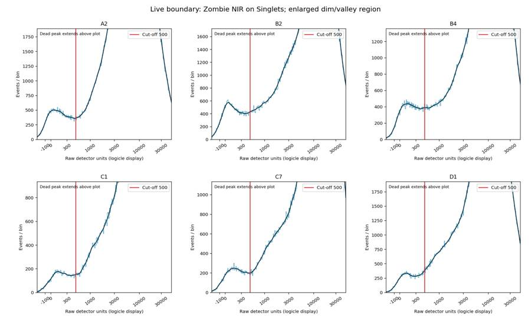
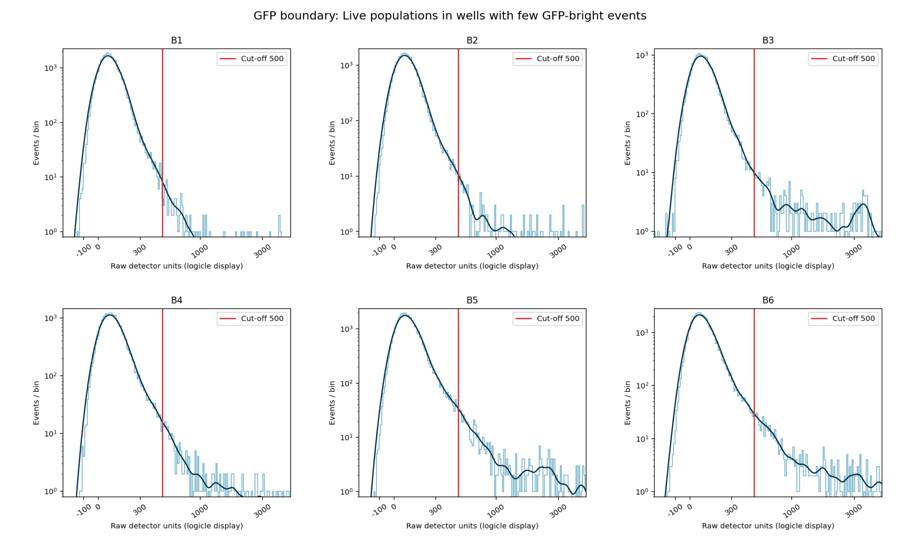
tool call · exec
const r=await Promise.allSettled(["cells_gates_2.png","singlets_gates_2.png","live_gates_2.png","gfp_gates_2.png"].map(f=>tools.view_image({path:"/task/outputs/plots/"+f})));for(const x of r){if(x.status==="fulfilled")image(x.value.image_url);else text(x.reason)}
tool output
Script completed Wall time 0.0 seconds Output:
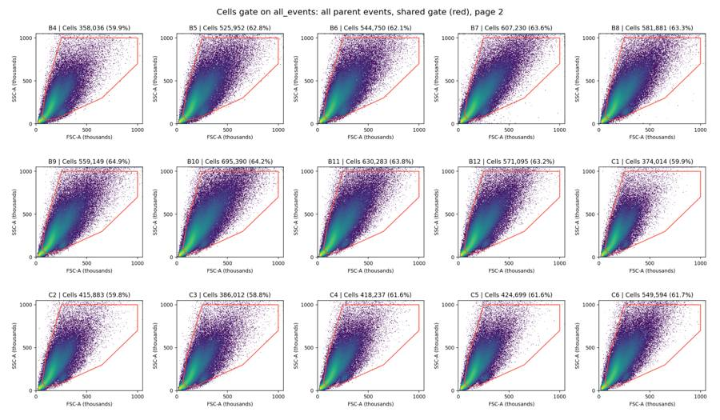
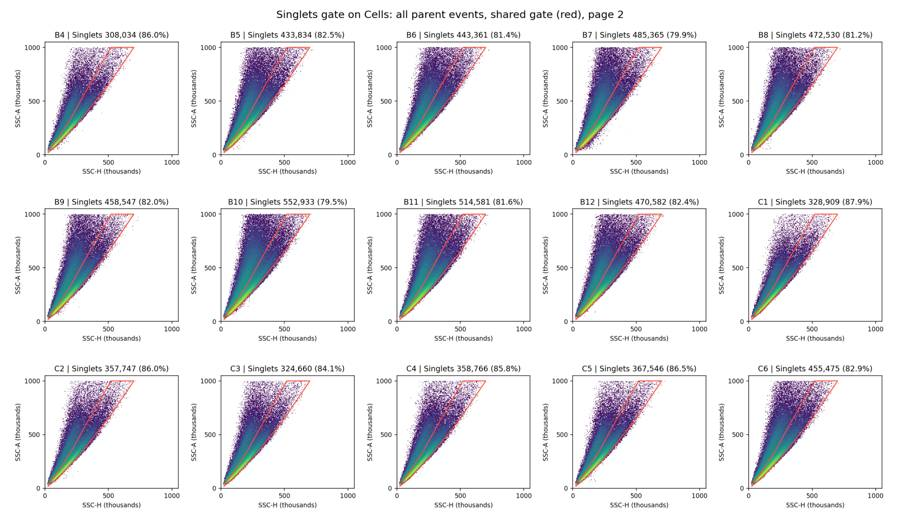
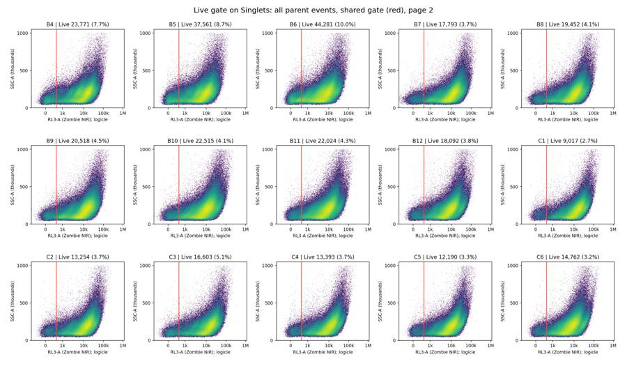
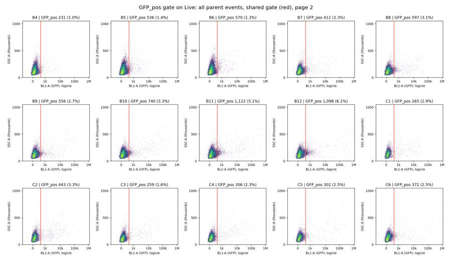
tool call · exec
text(await tools.apply_patch("*** Begin Patch\n*** Update File: /task/outputs/gate_plate.py\n@@\n-LIVE_MAX=500.0\n+LIVE_MAX=400.0\n@@\n metadata=s.get_metadata()\n assert metadata['wellid']==row.well\n+ assert metadata['date']=='06-Mar-2023'\n+ for detector,label,voltage in [('FSC-A','FSC-A','30'),('SSC-A','SSC-A','300'),\n+ ('BL1-A','AAV-GFP-GFP-A','250'),('RL3-A','LiveDead-Zombie NIR-A','300'),\n+ ('VL1-A','BV421-NCAM-A','300')]:\n+ assert s.pns_labels[ix[detector]]==label\n+ assert metadata[f'p{ix[detector]+1}v']==voltage\n@@\n- rec['Live_near_cutoff_400_600']=int(np.sum(masks['Singlets']&(e[:,ix['RL3-A']]>=400)&(e[:,ix['RL3-A']]<600)))\n+ rec['Live_near_cutoff_300_500']=int(np.sum(masks['Singlets']&(e[:,ix['RL3-A']]>=300)&(e[:,ix['RL3-A']]<500)))\n*** Update File: /task/outputs/plot_plate.py\n@@\n- vals=np.array([-100,0,300,1000,3000,10000,30000]) if channel=='live' else np.array([-100,0,300,1000,3000])\n+ vals=np.array([0,300,1000,3000,10000,30000]) if channel=='live' else np.array([0,300,1000,3000])\n*** End Patch"))
text(await tools.exec_command({cmd:"OPENBLAS_NUM_THREADS=1 python /task/outputs/gate_plate.py > /task/outputs/diagnostics/gating.log 2>&1","yield_time_ms":1000,"max_output_tokens":2000}))
text(await tools.exec_command({cmd:"python - <<'PY'\nimport pandas as pd\np=pd.read_csv('/task/outputs/diagnostics/time_bins.csv')\nfor w,spans in [('B7',[(1,4),(14,16),(30,32),(61,62)]),('B8',[(1,3),(9,12)])]:\n d=p[p.well==w]\n print(w)\n for a,b in spans:\n v=d[(d.start_s>=a)&(d.start_s<b)]\n print(a,b, 'rates',v.rate.tolist(),'scatter',v['median_SSC-A'].tolist(),'eventsum',v.total_events.sum())\nPY","max_output_tokens":2000}))
tool output
Script completed
Wall time 1.4 seconds
Output:
{}
{"chunk_id":"8f38f6","wall_time_seconds":1.000953778,"session_id":27747,"original_token_count":0,"output":""}
{"chunk_id":"3b1c5b","wall_time_seconds":0.109128575,"exit_code":0,"original_token_count":113,"output":"B7\n1 4 rates [1784.0, 1782.0, 1821.0] scatter [132960.0, 84450.5, 72923.0] eventsum 5387\n14 16 rates [13961.0, 13981.0] scatter [146805.0, 141388.0] eventsum 27942\n30 32 rates [17476.0, 16078.0] scatter [117213.5, 100080.5] eventsum 33554\n61 62 rates [3885.0] scatter [86254.0] eventsum 3885\nB8\n1 3 rates [92.0, 34.0] scatter [30975.5, 29489.5] eventsum 126\n9 12 rates [15194.0, 14707.0, 14229.0] scatter [102069.0, 118276.0, 128859.0] eventsum 44130\n"}tool call · exec
const rr=await Promise.allSettled(["singlets_gates_1.png","singlets_gates_3.png","live_histograms_all.png","gfp_histograms_all.png"].map(f=>tools.view_image({path:"/task/outputs/plots/"+f})));for(const r of rr){if(r.status==="fulfilled")image(r.value.image_url);else text(r.reason)}
tool output
Script completed Wall time 0.1 seconds Output:
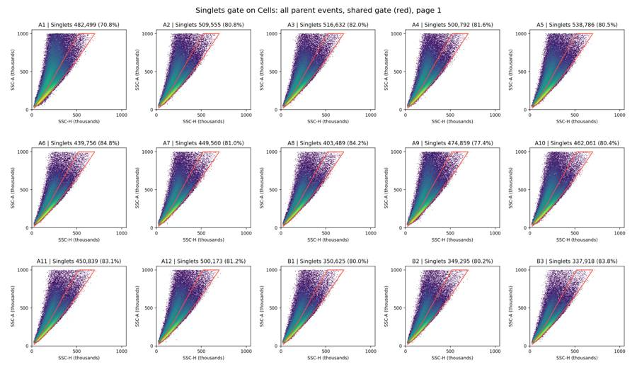
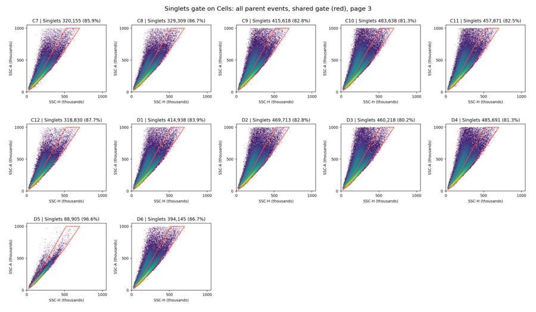
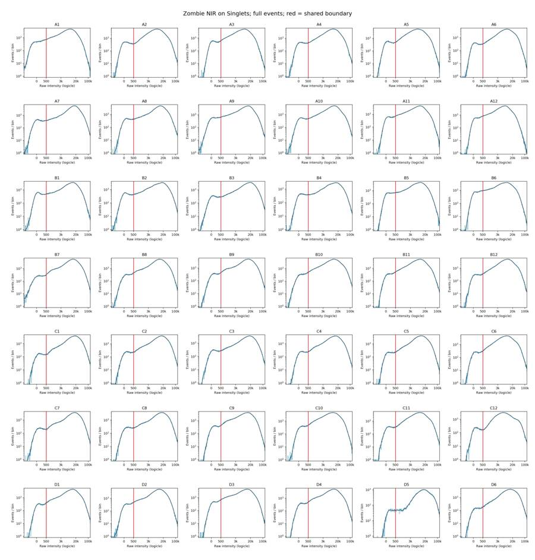
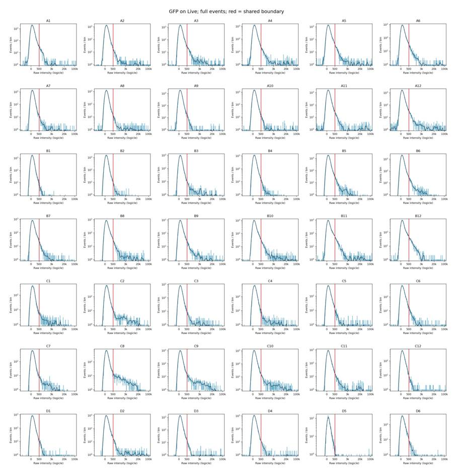
tool call · exec
text(await tools.exec_command({cmd:"tail -4 /task/outputs/diagnostics/gating.log\npython - <<'PY'\nimport json\nm=json.load(open('/task/outputs/diagnostics/metrics.json'))\nprint(len(m))\nif len(m)==42:\n print('D5',m[-2]['Live'])\n print('sat_max',max((r['any_gating_channel_saturated_pct'],r['well']) for r in m))\n for p in ['BL1-A','RL3-A']:\n print(p,'live sat max',max((r[p+'_live_saturated_count']/r['Live']*100,r['well'],r[p+'_live_saturated_count']) for r in m))\nPY","max_output_tokens":2000}))
image((await tools.view_image({path:"/task/outputs/plots/qc_selected_details.png"})).image_url)
tool output
Script completed Wall time 0.1 seconds Output:
{"chunk_id":"6c743f","wall_time_seconds":0.000003526,"exit_code":0,"original_token_count":73,"output":"C1 {'Cells': 374014, 'Singlets': 328909, 'Live': 7850, 'GFP_pos': 240}\nC2 {'Cells': 415883, 'Singlets': 357747, 'Live': 11477, 'GFP_pos': 392}\nC3 {'Cells': 386012, 'Singlets': 324660, 'Live': 14506, 'GFP_pos': 229}\nC4 {'Cells': 418237, 'Singlets': 358766, 'Live': 11519, 'GFP_pos': 273}\n29\n"}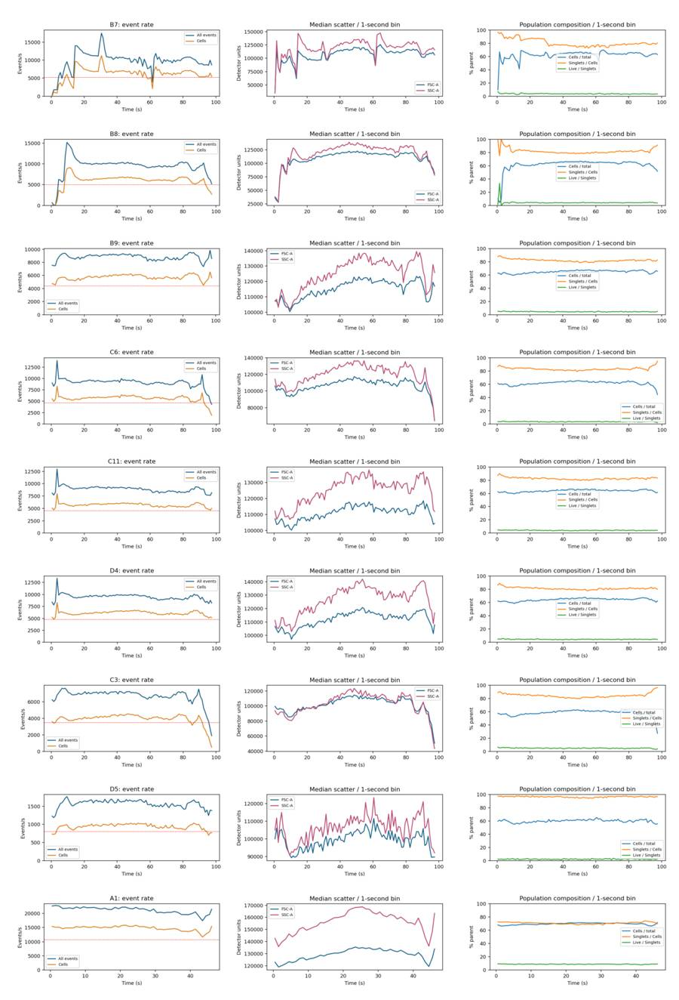
27
agent
I’ve set the final shared boundaries to Zombie NIR <400 and GFP ≥500 in raw detector units. The Live boundary falls within the shallow trough visible in several wells; the GFP boundary sits above the main dim population in wells with few bright events. B7 and B8 will be marked unusable for flow instability, with counts retained for audit.
tool call · exec
text(await tools.apply_patch("*** Begin Patch\n*** Add File: /task/outputs/report_qc.py\n+\"\"\"Write reviewed whole-well QC decisions and validate the deliverable tables.\"\"\"\n+from pathlib import Path\n+import json\n+import numpy as np\n+import pandas as pd\n+from lxml import etree\n+\n+OUT=Path('/task/outputs')\n+layout=pd.read_csv('/task/inputs/plate_layout.csv',keep_default_na=False)\n+metrics=json.loads((OUT/'diagnostics'/'metrics.json').read_text())\n+assert len(metrics)==42\n+m={r['well']:r for r in metrics}\n+time=pd.read_csv(OUT/'diagnostics'/'time_bins.csv')\n+counts=pd.read_csv(OUT/'counts.csv')\n+rows=[]\n+for row in layout.itertuples(index=False):\n+ r=m[row.well];d=time[time.well==row.well]\n+ evidence=(f\"total={r['total_events']}; Cells={r['Cells']}; Singlets={r['Singlets']}; \"\n+ f\"Live={r['Live']}; GFP_pos={r['GFP_pos']}; Time={r['first_event_s']:.3f}-{r['last_event_s']:.3f} s; \"\n+ f\"baseline={r['baseline_rate']:.1f} events/s; final 5 s={r['end_5s_rate']:.1f} events/s \"\n+ f\"({100*r['end_5s_rate']/r['baseline_rate']:.1f}% baseline); \"\n+ f\"at scale ceiling: FSC-A={r['FSC-A_saturated_pct']:.4f}%, SSC-A={r['SSC-A_saturated_pct']:.4f}%, \"\n+ f\"SSC-H={r['SSC-H_saturated_pct']:.4f}%, BL1-A={r['BL1-A_saturated_pct']:.4f}%, RL3-A={r['RL3-A_saturated_pct']:.4f}%\")\n+ # Whole-well exclusions following visual review of the rate, scatter and\n+ # parent-fraction traces. Gate memberships are never changed by this decision.\n+ usable='yes';category='ok'\n+ if row.well=='B7':\n+ usable='no';category='clog_or_interrupted_flow'\n+ evidence+=(\"; repeated flow disturbance: 1-4 s=1782-1821 events/s (17% baseline), \"\n+ \"14-16 s=13961-13981/s, 30-32 s=16078-17476/s, 61-62 s=3885/s (37% baseline); \"\n+ \"median SSC-A changes from 65718 at 13-14 s to 146805 at 14-15 s; \"\n+ f\"largest inter-event gap={r['max_gap_s']:.3f} s at {r['max_gap_starts_s']:.3f} s; \"\n+ \"unstable whole-well acquisition, physical cause not directly observed; confidence: high\")\n+ elif row.well=='B8':\n+ usable='no';category='clog_or_interrupted_flow'\n+ evidence+=(\"; prolonged abnormal startup: 1-2 s=92/s and 2-3 s=34/s (0.9% and 0.3% baseline); \"\n+ \"4-8 s remains 5643-6262/s, followed by 14229-15194/s at 9-12 s; \"\n+ \"median SSC-A at 1-3 s=29490-30976, versus 102069-128859 at 9-12 s; \"\n+ \"exclude conservatively for near-empty startup followed by a burst and scatter shift; confidence: medium\")\n+ else:\n+ evidence+=f\"; largest inter-event gap={r['max_gap_s']:.3f} s\"\n+ if row.well=='A1':\n+ evidence+=(\"; recorded flow setting 200 uL/min versus 100 in the other wells explains the shorter acquisition; \"\n+ \"continuous flow and adequate gated yield retained\")\n+ elif row.well=='D5':\n+ evidence+=(f\"; low total yield but stable flow and {r['Live']} Live events (above the 1000-event review floor); \"\n+ f\"GFP_pos n={r['GFP_pos']} has limited counting precision, retained\")\n+ if r['end_5s_rate']<.8*r['baseline_rate']:\n+ last=d.iloc[-1]\n+ evidence+=(f\"; terminal taper: final partial bin {last.start_s:g}-{last.end_s:.3f} s=\"\n+ f\"{last.rate:.1f}/s ({100*last.rate/r['baseline_rate']:.1f}% baseline); \"\n+ \"no sustained terminal cessation, retained\")\n+ if row.well in ['C6','C11','D4']:\n+ v=d[d.start_s==3].iloc[0]\n+ evidence+=(f\"; isolated 3-4 s peak={v.rate:.0f}/s without preceding low flow or material scatter discontinuity, retained\")\n+ rows.append(dict(file=row.file,well=row.well,usable=usable,reason_category=category,evidence=evidence))\n+flags=pd.DataFrame(rows)\n+flags.to_csv(OUT/'flags.csv',index=False)\n+\n+assert counts.columns.tolist()==['file','well','population','count','parent_population','pct_of_parent']\n+assert flags.columns.tolist()==['file','well','usable','reason_category','evidence']\n+assert len(counts)==168 and len(flags)==42\n+assert not counts.duplicated(['file','population']).any()\n+assert flags[['file','well']].equals(layout[['file','well']])\n+assert pd.api.types.is_integer_dtype(counts['count'])\n+assert counts.pct_of_parent.between(0,100).all()\n+assert set(flags.usable)<={'yes','no'}\n+assert ((flags.usable=='yes')==(flags.reason_category=='ok')).all()\n+assert flags.loc[flags.usable=='no','evidence'].str.endswith(('confidence: high','confidence: medium','confidence: low')).all()\n+for row in layout.itertuples(index=False):\n+ d=counts[counts.file==row.file]\n+ assert d.well.eq(row.well).all()\n+ assert d.population.tolist()==['Cells','Singlets','Live','GFP_pos']\n+ assert d.parent_population.tolist()==['all_events','Cells','Singlets','Live']\n+ expected=[m[row.well][p] for p in d.population]\n+ assert d['count'].tolist()==expected\n+ parent=np.array([m[row.well]['total_events']]+expected[:-1])\n+ assert np.all(np.array(expected)<=parent)\n+ np.testing.assert_allclose(d.pct_of_parent.to_numpy(),100*np.array(expected)/parent,rtol=1e-13)\n+root=etree.parse(str(OUT/'gates.xml'))\n+ns={'g':'http://www.isac-net.org/std/Gating-ML/v2.0/gating'}\n+gates=root.xpath('//g:PolygonGate | //g:RectangleGate',namespaces=ns)\n+assert len(gates)==4\n+dims=root.xpath('//g:dimension',namespaces=ns)\n+for d in dims: assert d.get('{'+ns['g']+'}compensation-ref')=='uncompensated'\n+validation=json.loads((OUT/'diagnostics'/'validation.json').read_text())\n+validation.update(count_rows=168,flag_rows=42,table_schema_and_percentages_verified=True,\n+ unusable_wells=flags.loc[flags.usable=='no','well'].tolist(),\n+ total_events=sum(r['total_events'] for r in metrics),\n+
… [498 more characters not shown]tool output
Script completed
Wall time 0.0 seconds
Output:
{}
{"chunk_id":"ca7837","wall_time_seconds":0.000003105,"exit_code":0,"original_token_count":89,"output":"D2 {'Cells': 567261, 'Singlets': 469713, 'Live': 17394, 'GFP_pos': 372}\nD3 {'Cells': 573695, 'Singlets': 460218, 'Live': 22649, 'GFP_pos': 206}\nD4 {'Cells': 597170, 'Singlets': 485691, 'Live': 18641, 'GFP_pos': 227}\nD5 {'Cells': 92060, 'Singlets': 88905, 'Live': 1817, 'GFP_pos': 32}\nD6 {'Cells': 454386, 'Singlets': 394145, 'Live': 7234, 'GFP_pos': 140}\n"}tool call · exec
const r=await Promise.allSettled([
tools.exec_command({cmd:"python /task/outputs/report_qc.py","yield_time_ms":1000,"max_output_tokens":4000}),
tools.exec_command({cmd:"OPENBLAS_NUM_THREADS=1 python /task/outputs/plot_plate.py > /task/outputs/diagnostics/plots.log 2>&1","yield_time_ms":1000,"max_output_tokens":2000})
]); r.forEach(text)
text(await tools.exec_command({cmd:"python - <<'PY'\nimport json,pandas as pd\nm=json.load(open('/task/outputs/diagnostics/metrics.json'))\nprint('total events',sum(r['total_events'] for r in m))\nprint('saturation maximum',max((r['any_gating_channel_saturated_pct'],r['well']) for r in m))\nprint('Live range',min(r['Live'] for r in m),max(r['Live'] for r in m))\nprint('GFP range',min(r['GFP_pos'] for r in m),max(r['GFP_pos'] for r in m))\nprint('max saturation live BL1',max((r['BL1-A_live_saturated_count']/r['Live']*100,r['well'],r['BL1-A_live_saturated_count']) for r in m))\nprint('All nonfinite',sum(r['nonfinite_values'] for r in m),'time reversals',sum(r['time_reversals'] for r in m),'lost',sum(r['lost'] for r in m))\nprint(pd.read_csv('/task/outputs/counts.csv').head(8).to_string(index=False))\nPY","max_output_tokens":3000}))
tool output
Script completed
Wall time 1.4 seconds
Output:
{"status":"fulfilled","value":{"chunk_id":"ed065a","wall_time_seconds":0.164938703,"exit_code":0,"original_token_count":422,"output":"well usable reason_category\n A1 yes ok\n A2 yes ok\n A3 yes ok\n A4 yes ok\n A5 yes ok\n A6 yes ok\n A7 yes ok\n A8 yes ok\n A9 yes ok\n A10 yes ok\n A11 yes ok\n A12 yes ok\n B1 yes ok\n B2 yes ok\n B3 yes ok\n B4 yes ok\n B5 yes ok\n B6 yes ok\n B7 no clog_or_interrupted_flow\n B8 no clog_or_interrupted_flow\n B9 yes ok\n B10 yes ok\n B11 yes ok\n B12 yes ok\n C1 yes ok\n C2 yes ok\n C3 yes ok\n C4 yes ok\n C5 yes ok\n C6 yes ok\n C7 yes ok\n C8 yes ok\n C9 yes ok\n C10 yes ok\n C11 yes ok\n C12 yes ok\n D1 yes ok\n D2 yes ok\n D3 yes ok\n D4 yes ok\n D5 yes ok\n D6 yes ok\nValidated 168 count rows, 42 flag rows, all parent percentages, and four uncompensated gates.\n"}}
{"status":"fulfilled","value":{"chunk_id":"bfe65f","wall_time_seconds":1.000565346,"session_id":44453,"original_token_count":0,"output":""}}
{"chunk_id":"8e1d28","wall_time_seconds":0.101817075,"exit_code":0,"original_token_count":256,"output":"total events 33927506\nsaturation maximum (1.1757120991983456, 'A1')\nLive range 1817 36895\nGFP range 32 978\nmax saturation live BL1 (0.0881057268722467, 'A6', 16)\nAll nonfinite 0 time reversals 3 lost 0\n file well population count parent_population pct_of_parent\nSerotype panel_2_Rep2_Group_A1.fcs A1 Cells 681430 all_events 69.624185\nSerotype panel_2_Rep2_Group_A1.fcs A1 Singlets 482499 Cells 70.806833\nSerotype panel_2_Rep2_Group_A1.fcs A1 Live 36639 Singlets 7.593591\nSerotype panel_2_Rep2_Group_A1.fcs A1 GFP_pos 512 Live 1.397418\nSerotype panel_2_Rep2_Group_A2.fcs A2 Cells 630526 all_events 67.384983\nSerotype panel_2_Rep2_Group_A2.fcs A2 Singlets 509555 Cells 80.814273\nSerotype panel_2_Rep2_Group_A2.fcs A2 Live 25311 Singlets 4.967275\nSerotype panel_2_Rep2_Group_A2.fcs A2 GFP_pos 391 Live 1.544783\n"}tool call · exec
text(await tools.exec_command({cmd:"python - <<'PY'\nimport json,flowkit as fk,numpy as np\nm=json.load(open('/task/outputs/diagnostics/metrics.json'))\nfor r in m:\n if r['time_reversals']:\n s=fk.Sample('/task/inputs/raw/'+r['file'],subsample=10**12); t=s.get_channel_events('Time',source='raw',subsample=False)\n i=np.flatnonzero(np.diff(t)<0)\n print(r['well'],r['time_reversals'],'indices',i.tolist(),'values',[(t[j],t[j+1],t[j+1]-t[j]) for j in i])\nPY","yield_time_ms":1000,"max_output_tokens":2000}))
tool output
Script completed
Wall time 1.1 seconds
Output:
{"chunk_id":"8622c1","wall_time_seconds":0.91299258,"exit_code":1,"original_token_count":97,"output":"Traceback (most recent call last):\n File \"<stdin>\", line 5, in <module>\n File \"/usr/local/lib/python3.12/site-packages/flowkit/_models/sample.py\", line 757, in get_channel_events\n events = events[:, channel_index]\n ~~~~~~^^^^^^^^^^^^^^^^^^\nIndexError: only integers, slices (`:`), ellipsis (`...`), numpy.newaxis (`None`) and integer or boolean arrays are valid indices\n"}tool call · exec
text(await tools.exec_command({cmd:"python - <<'PY'\nimport json,flowkit as fk,numpy as np\nm=json.load(open('/task/outputs/diagnostics/metrics.json'))\nfor r in m:\n if r['time_reversals']:\n s=fk.Sample('/task/inputs/raw/'+r['file'],subsample=10**12); t=s.get_events(source='raw',subsample=False)[:,s.get_channel_index('Time')]\n i=np.flatnonzero(np.diff(t)<0)\n print(r['well'],r['time_reversals'],'indices',i.tolist(),'values',[(t[j],t[j+1],t[j+1]-t[j]) for j in i],flush=True)\nPY","yield_time_ms":1000,"max_output_tokens":2000}))
tool output
Script completed
Wall time 1.2 seconds
Output:
{"chunk_id":"60073e","wall_time_seconds":1.001626189,"session_id":16394,"original_token_count":30,"output":"C6 1 indices [4442] values [(3.894, 0.014, -3.8800000000000003)]\nC11 1 indices [4102] values [(3.896, 0.014, -3.882)]\n"}tool call · exec
text(await tools.write_stdin({session_id:16394,chars:"","yield_time_ms":1000,"max_output_tokens":2000}))
text(await tools.exec_command({cmd:"python - <<'PY'\nimport flowkit as fk,numpy as np,json\nfor well in ['C6','C11','D4']:\n s=fk.Sample(f'/task/inputs/raw/Serotype panel_2_Rep2_Group_{well}.fcs',subsample=10**12)\n e=s.get_events(source='raw',subsample=False);t=e[:,0];i=np.flatnonzero(np.diff(t)<0)[0]+1\n print(well,'prefix events',i,'prefix first/last',t[0],t[i-1],'next',t[i],'prefix frac',i/len(t)*100,flush=True)\n print('first times',t[:20].tolist(),'reset region',t[i-5:i+5].tolist(),flush=True)\n # Check whether the exact prefix is duplicated inside the main segment.\n hits=np.flatnonzero(np.all(e[i:,:]==e[0,:],axis=1))+i\n print('duplicate first full event candidates',hits.tolist(),flush=True)\n print('metadata',s.get_metadata()['btim'],s.get_metadata()['etim'],s.get_metadata()['vol'],flush=True)\nPY","yield_time_ms":1000,"max_output_tokens":3000}))
tool output
Script completed
Wall time 1.2 seconds
Output:
{"chunk_id":"e0d042","wall_time_seconds":0.000002724,"exit_code":0,"original_token_count":20,"output":"D4 1 indices [4083] values [(3.8360000000000003, 0.014, -3.8220000000000005)]\n"}
{"chunk_id":"72d474","wall_time_seconds":1.000520959,"session_id":37367,"original_token_count":202,"output":"C6 prefix events 4443 prefix first/last 3.35 3.894 next 0.014 prefix frac 0.49864704251687125\nfirst times [3.35, 3.35, 3.35, 3.35, 3.35, 3.35, 3.35, 3.35, 3.351, 3.351, 3.351, 3.351, 3.351, 3.351, 3.351, 3.352, 3.352, 3.352, 3.352, 3.352] reset region [3.894, 3.894, 3.894, 3.894, 3.894, 0.014, 0.014, 0.014, 0.014, 0.014]\nduplicate first full event candidates []\nmetadata 10:28:56 10:30:34 163000\nC11 prefix events 4103 prefix first/last 3.345 3.896 next 0.014 prefix frac 0.47232310906715325\nfirst times [3.345, 3.345, 3.346, 3.346, 3.346, 3.346, 3.346, 3.346, 3.346, 3.346, 3.346, 3.347, 3.347, 3.347, 3.347, 3.347, 3.348, 3.348, 3.348, 3.348] reset region [3.896, 3.896, 3.896, 3.896, 3.896, 0.014, 0.014, 0.014, 0.014, 0.014]\nduplicate first full event candidates []\nmetadata 10:39:31 10:41:09 163000\n"}32
agent
The final QC check found timestamp resets in C6, C11 and D4: each starts with about 4,000 events near 3.3–3.9 seconds, then jumps back to 0.014 seconds. That explains their apparent startup peaks. I’m marking these three unusable pending review because the origin of the extra acquisition segment is unclear.
tool call · exec
text(await tools.apply_patch("*** Begin Patch\n*** Add File: /task/outputs/inspect_time_resets.py\n+\"\"\"Audit non-monotone timestamps without altering or excluding any events.\"\"\"\n+from pathlib import Path\n+import json\n+import numpy as np\n+import pandas as pd\n+import flowkit as fk\n+import matplotlib\n+matplotlib.use('Agg')\n+import matplotlib.pyplot as plt\n+\n+OUT=Path('/task/outputs')\n+metrics=json.loads((OUT/'diagnostics'/'metrics.json').read_text())\n+selected=[r for r in metrics if r['time_reversals']]\n+fig,axes=plt.subplots(len(selected),2,figsize=(14,10),layout='constrained')\n+rows=[]\n+for axs,r in zip(axes,selected):\n+ s=fk.Sample('/task/inputs/raw/'+r['file'],subsample=10**12)\n+ e=s.get_events(source='raw',subsample=False)\n+ t=e[:,s.get_channel_index('Time')]\n+ jumps=np.flatnonzero(np.diff(t)<0)+1\n+ for i in jumps:\n+ rows.append(dict(file=r['file'],well=r['well'],events_before_reset=int(i),\n+ first_stored_time_s=float(t[0]),before_reset_s=float(t[i-1]),after_reset_s=float(t[i]),\n+ backward_jump_s=float(t[i-1]-t[i]),prefix_pct=100*i/len(t),\n+ next_segment_events=int(len(t)-i)))\n+ x=np.arange(1,len(t)+1)\n+ axs[0].plot(x,t,lw=.7,color='#155d81')\n+ axs[0].set_title(f\"{r['well']}: all {len(t):,} events in stored order\")\n+ # A contiguous zoom of the first 15,000 stored events, not a subsample.\n+ n=min(15000,len(t))\n+ axs[1].plot(x[:n],t[:n],lw=1,color='#155d81')\n+ for i in jumps:\n+ axs[1].axvline(i,color='#cf3440',ls='--')\n+ axs[1].annotate(f'{t[i-1]:.3f} to {t[i]:.3f} s\\nafter {i:,} events',\n+ xy=(i,t[i]),xytext=(i+1500,2.7),arrowprops={'arrowstyle':'->'})\n+ axs[1].set_title('Contiguous first 15,000 events: timestamp reset')\n+ for ax in axs:\n+ ax.set_xlabel('Stored event number (1-based)');ax.set_ylabel('Time (s)')\n+fig.suptitle('Non-monotone acquisition Time: prefix followed by a reset; all events retained in counts',fontsize=14)\n+fig.savefig(OUT/'plots'/'time_resets.png',dpi=160)\n+pd.DataFrame(rows).to_csv(OUT/'diagnostics'/'time_resets.csv',index=False)\n+print(pd.DataFrame(rows).to_string(index=False))\n*** Update File: /task/outputs/report_qc.py\n@@\n time=pd.read_csv(OUT/'diagnostics'/'time_bins.csv')\n+resets=pd.read_csv(OUT/'diagnostics'/'time_resets.csv')\n@@\n elif row.well=='B8':\n@@\n \"exclude conservatively for near-empty startup followed by a burst and scatter shift; confidence: medium\")\n+ elif r['time_reversals']:\n+ usable='no';category='other'\n+ v=resets[resets.well==row.well].iloc[0]\n+ evidence+=(f\"; non-monotone acquisition Time: first {int(v.events_before_reset)} stored events \"\n+ f\"({v.prefix_pct:.3f}% of file) run from {v.first_stored_time_s:.3f} to {v.before_reset_s:.3f} s, \"\n+ f\"then Time resets to {v.after_reset_s:.3f} s (backward jump {v.backward_jump_s:.3f} s) \"\n+ f\"before the remaining {int(v.next_segment_events)} events; \"\n+ \"time histograms superimpose these segments and cannot establish the true rate at 3-4 s; \"\n+ \"prefix provenance is unresolved, so exclude the complete file pending acquisition review; confidence: medium\")\n@@\n- if row.well in ['C6','C11','D4']:\n- v=d[d.start_s==3].iloc[0]\n- evidence+=(f\"; isolated 3-4 s peak={v.rate:.0f}/s without preceding low flow or material scatter discontinuity, retained\")\n*** End Patch"))
text(await tools.exec_command({cmd:"OPENBLAS_NUM_THREADS=1 python /task/outputs/inspect_time_resets.py","yield_time_ms":1000,"max_output_tokens":2000}))
tool output
Script completed
Wall time 1.2 seconds
Output:
{}
{"chunk_id":"fa29a8","wall_time_seconds":1.001988742,"session_id":65862,"original_token_count":0,"output":""}tool call · exec
text(await tools.apply_patch("*** Begin Patch\n*** Update File: /task/outputs/plot_plate.py\n@@\n- ax.set_ylim(bottom=0);ax.set_title(w);ax.set_xlabel('Time (s)');ax.set_ylabel('Events/s')\n+ ax.set_ylim(bottom=0);ax.set_title(w+(' [Time reset]' if metrics[w]['time_reversals'] else ''));ax.set_xlabel('Time (s)');ax.set_ylabel('Events/s')\n@@\n- axs[0].set_title(f'{w}: event rate');axs[0].set_ylabel('Events/s');axs[0].set_ylim(bottom=0)\n+ axs[0].set_title(f'{w}: '+('overlapping recorded Time' if metrics[w]['time_reversals'] else 'event rate'));axs[0].set_ylabel('Events/s');axs[0].set_ylim(bottom=0)\n*** Add File: /task/outputs/notes.md\n+## Gates\n+\n+FlowKit 1.2.3 processed all 33,927,506 events in 42 files, without subsampling or compensation. One shared tree contains exactly four operations: **Cells → Singlets → Live → GFP_pos**. All dimensions use detector IDs and `compensation_ref=\"uncompensated\"`. Gates use raw coordinates; fluorescence plots use logicle display (T=1,048,576, W=0.5, M=4.5, A=0). NCAM is not gated.\n+\n+- **Cells:** FSC-A × SSC-A polygon enclosing the main cloud, placed using A1, B1, C1 and D1 and checked across all wells (`plots/cells_gates_1–3.png`). The lower-left edge joins (60,000,100,000) to (100,000,40,000), excluding the small, low-scatter cloud. Upper limits of 1,000,000 exclude the 1,048,575 scale-ceiling piles. Complete vertices are in `gates.xml` and `gate_plate.py`.\n+- **Singlets:** SSC-H × SSC-A polygon following the narrow diagonal ridge within Cells; the upper SSC-A edge removes the broad aggregate tail. The same ridge was checked across all wells (`plots/singlets_gates_1–3.png`); exact vertices are saved.\n+- **Live:** one-dimensional rectangle, **RL3-A <400**. A2, B2, B4, C1 and C7 show a shallow trough around 300–500 between the dim component and the bright peak. D1 has a slightly lower trough. These histograms set the common boundary (`plots/live_boundary_evidence.png`), checked against every well's histogram and RL3-A × SSC-A plot. Separation is weak in some wells, especially A1, A12, B10, B11 and D6; their boundary remains identical.\n+- **GFP_pos:** one-dimensional rectangle, **BL1-A ≥500**, above the main negative-population edge, primarily judged from B1 and B2 and cross-checked in B3–B6 (`plots/gfp_boundary_evidence.png` and GFP gate plots). These wells contain few bright events but are transduced samples, not controls. Both fluorescence boundaries are operational, sample-derived choices; absent controls prevent independent validation of negative populations.\n+\n+## Quality control\n+\n+Reviewed every file's identity, labels, voltages, finite values, yield, scatter, saturation and acquisition Time. One-second rates use the median from 10–80 s (through 5 s before the end for A1); partial-bin durations are corrected. Time-order checks complement rate histograms, scatter medians and population fractions (`plots/time_qc_all.png`, `qc_selected_details.png`, `time_resets.png`).\n+\n+**Exclude B7 and B8** for disrupted flow: B7 drops to 1,782–1,821 events/s at 1–4 s, bursts to 17,476/s at 30–31 s, and drops again at 61–62 s; B8 records only 126 events at 1–3 s before a 14,229–15,194/s burst. **Exclude C6, C11 and D4 pending acquisition review:** 4,443, 4,103 and 4,084 initial events respectively precede backward Time jumps of 3.880, 3.882 and 3.822 s. Their prefix provenance is unresolved; overlapping timestamps create apparent peaks.\n+\n+Other wells are retained. A1's shorter run has a recorded 200 versus 100 µL/min flow setting. D5 has 153,195 total and 1,817 Live events, exceeding the 1,000-Live-event review floor; its 32 GFP_pos events have limited precision. Terminal tapers are quantified in `flags.csv` but lack sustained cessation. Scale-ceiling events reach at most 1.176% across gating channels; no whole-well saturation failure was found. Counts include excluded wells without time-based event removal. Export/reload produced identical gate memberships for all 42 files; schemas, nesting and percentages passed validation.\n+\n+## Deviations\n+\n+None.\n*** End Patch"))
text(await tools.exec_command({cmd:"python /task/outputs/report_qc.py\nwc -w /task/outputs/notes.md","max_output_tokens":4000}))
text(await tools.write_stdin({session_id:65862,chars:"","yield_time_ms":1000,"max_output_tokens":2000}))
tool output
Script completed
Wall time 0.4 seconds
Output:
{}
{"chunk_id":"e8d81b","wall_time_seconds":0.184799517,"exit_code":0,"original_token_count":428,"output":"well usable reason_category\n A1 yes ok\n A2 yes ok\n A3 yes ok\n A4 yes ok\n A5 yes ok\n A6 yes ok\n A7 yes ok\n A8 yes ok\n A9 yes ok\n A10 yes ok\n A11 yes ok\n A12 yes ok\n B1 yes ok\n B2 yes ok\n B3 yes ok\n B4 yes ok\n B5 yes ok\n B6 yes ok\n B7 no clog_or_interrupted_flow\n B8 no clog_or_interrupted_flow\n B9 yes ok\n B10 yes ok\n B11 yes ok\n B12 yes ok\n C1 yes ok\n C2 yes ok\n C3 yes ok\n C4 yes ok\n C5 yes ok\n C6 no other\n C7 yes ok\n C8 yes ok\n C9 yes ok\n C10 yes ok\n C11 no other\n C12 yes ok\n D1 yes ok\n D2 yes ok\n D3 yes ok\n D4 no other\n D5 yes ok\n D6 yes ok\nValidated 168 count rows, 42 flag rows, all parent percentages, and four uncompensated gates.\n469 /task/outputs/notes.md\n"}
{"chunk_id":"076e10","wall_time_seconds":0.000002975,"exit_code":0,"original_token_count":164,"output":" file well events_before_reset first_stored_time_s before_reset_s after_reset_s backward_jump_s prefix_pct next_segment_events\n Serotype panel_2_Rep2_Group_C6.fcs C6 4443 3.350 3.894 0.014 3.880 0.498647 886568\nSerotype panel_2_Rep2_Group_C11.fcs C11 4103 3.345 3.896 0.014 3.882 0.472323 864582\n Serotype panel_2_Rep2_Group_D4.fcs D4 4084 3.292 3.836 0.014 3.822 0.441130 921721\n"}tool call · exec
const r=await Promise.allSettled(["time_resets.png","live_boundary_evidence.png","gfp_boundary_evidence.png"].map(f=>tools.view_image({path:"/task/outputs/plots/"+f})));for(const x of r){if(x.status==="fulfilled")image(x.value.image_url);else text(x.reason)}
text(await tools.exec_command({cmd:"tail -5 /task/outputs/diagnostics/plots.log\ncat /task/outputs/diagnostics/validation.json\nrg --files /task/outputs | wc -l","max_output_tokens":4000}))
tool output
Script completed Wall time 0.1 seconds Output:
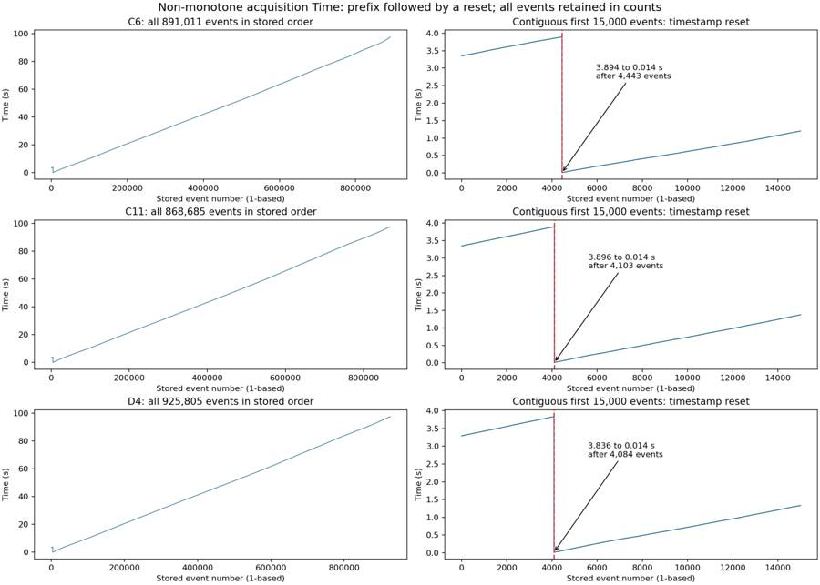
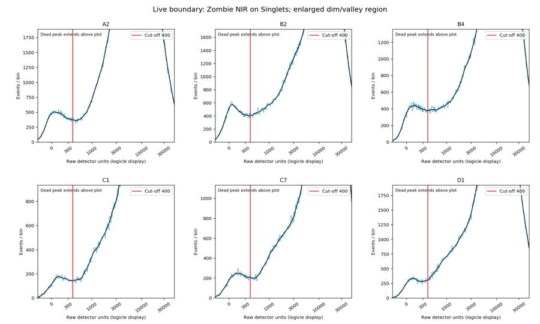
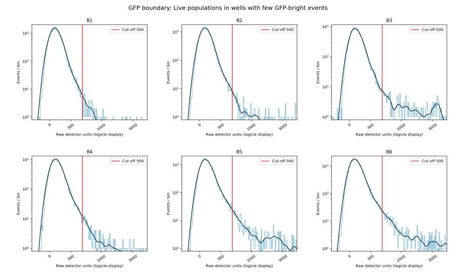
{"chunk_id":"74d13a","wall_time_seconds":0.000002985,"exit_code":0,"original_token_count":395,"output":"{\n \"flowkit_version\": \"1.2.3\",\n \"populations\": [\n \"Cells\",\n \"Singlets\",\n \"Live\",\n \"GFP_pos\"\n ],\n \"raw_uncompensated\": true,\n \"subsampling\": false,\n \"gate_count\": 4,\n \"files\": 42,\n \"gatingml_reloaded\": true,\n \"all_event_memberships_match_before_after_export\": true,\n \"gates_sha256\": \"03c4ffbbc3e41c136139dfc0302f90b4042d7c31a0a98329798105f8a69544c8\",\n \"live_max\": 400.0,\n \"gfp_min\": 500.0,\n \"cells_vertices\": [\n [\n 60000.0,\n 100000.0\n ],\n [\n 100000.0,\n 40000.0\n ],\n [\n 200000.0,\n 60000.0\n ],\n [\n 650000.0,\n 300000.0\n ],\n [\n 1000000.0,\n 700000.0\n ],\n [\n 1000000.0,\n 1000000.0\n ],\n [\n 250000.0,\n 1000000.0\n ],\n [\n 100000.0,\n 400000.0\n ]\n ],\n \"singlets_vertices\": [\n [\n 25000.0,\n 20000.0\n ],\n [\n 100000.0,\n 90000.0\n ],\n [\n 250000.0,\n 280000.0\n ],\n [\n 500000.0,\n 650000.0\n ],\n [\n 700000.0,\n 1000000.0\n ],\n [\n 520000.0,\n 1000000.0\n ],\n [\n 350000.0,\n 650000.0\n ],\n [\n 200000.0,\n 330000.0\n ],\n [\n 100000.0,\n 150000.0\n ],\n [\n 25000.0,\n 40000.0\n ]\n ],\n \"count_rows\": 168,\n \"flag_rows\": 42,\n \"table_schema_and_percentages_verified\": true,\n \"unusable_wells\": [\n \"B7\",\n \"B8\",\n \"C6\",\n \"C11\",\n \"D4\"\n ],\n \"total_events\": 33927506,\n \"total_gate_counts\": {\n \"Cells\": 21590965,\n \"Singlets\": 17738740,\n \"Live\": 819819,\n \"GFP_pos\": 16570\n }\n}\n141\n"}tool call · exec
text(await tools.apply_patch("*** Begin Patch\n*** Add File: /task/outputs/reproduce.sh\n+#!/usr/bin/env bash\n+set -euo pipefail\n+export OPENBLAS_NUM_THREADS=1\n+python /task/outputs/gate_plate.py\n+python /task/outputs/inspect_time_resets.py\n+python /task/outputs/report_qc.py\n+python /task/outputs/plot_plate.py\n*** End Patch"))
text(await tools.write_stdin({session_id:44453,chars:"","yield_time_ms":1000,"max_output_tokens":2000}))
text(await tools.exec_command({cmd:"PYTHONPATH=/task/outputs OPENBLAS_NUM_THREADS=1 python - <<'PY'\nimport plot_plate\nplot_plate.time_plots()\nPY","yield_time_ms":1000,"max_output_tokens":2000}))
text(await tools.exec_command({cmd:"python - <<'PY'\nfrom pathlib import Path\nout=Path('/task/outputs')\npatterns={'plots':['initial_*.png','explore_detail_*.png'], 'diagnostics':['initial_*.npz','initial_metrics.csv','explore.log','representatives.log']}\nremoved=[]\nfor sub,globs in patterns.items():\n for pattern in globs:\n for p in (out/sub).glob(pattern):\n p.unlink();removed.append(p.name)\nfor name in ['explore_plate.py','inspect_representatives.py']:\n p=out/name\n if p.exists():p.unlink();removed.append(name)\nprint('Removed',len(removed),'temporary exploration artifacts. Final gates, reports, diagnostics and reproduction scripts retained.')\nPY","max_output_tokens":2000}))
tool output
Script completed
Wall time 1.2 seconds
Output:
{}
{"chunk_id":"6b069e","wall_time_seconds":0.000002463,"exit_code":0,"original_token_count":0,"output":""}
{"chunk_id":"9e329a","wall_time_seconds":1.00063484,"session_id":46337,"original_token_count":0,"output":""}
{"chunk_id":"436f89","wall_time_seconds":0.000003014,"exit_code":0,"original_token_count":29,"output":"Removed 65 temporary exploration artifacts. Final gates, reports, diagnostics and reproduction scripts retained.\n"}tool call · exec
const rr=await Promise.allSettled(["live_gates_1.png","live_gates_3.png","gfp_gates_1.png","gfp_gates_3.png"].map(f=>tools.view_image({path:"/task/outputs/plots/"+f})));for(const r of rr){if(r.status==="fulfilled")image(r.value.image_url);else text(r.reason)}
text(await tools.exec_command({cmd:"python - <<'PY'\nfrom pathlib import Path\nimport pandas as pd,json,hashlib,flowkit as fk\nout=Path('/task/outputs')\nc=pd.read_csv(out/'counts.csv');f=pd.read_csv(out/'flags.csv');v=json.loads((out/'diagnostics/validation.json').read_text())\nassert hashlib.sha256((out/'gates.xml').read_bytes()).hexdigest()==v['gates_sha256']\ns=fk.parse_gating_xml(str(out/'gates.xml'))\nassert s.get_gate_ids()==[('Cells',('root',)),('Singlets',('root','Cells')),('Live',('root','Cells','Singlets')),('GFP_pos',('root','Cells','Singlets','Live'))]\nassert [x for x in (out/'notes.md').read_text().splitlines() if x.startswith('## ')]==['## Gates','## Quality control','## Deviations']\nprint('counts rows:',len(c),'flags rows:',len(f),'usable:',int((f.usable=='yes').sum()),'unusable:',int((f.usable=='no').sum()))\nprint('Gate tree:',s.get_gate_hierarchy(output='ascii'))\nprint('Files in outputs root:',', '.join(p.name for p in out.iterdir() if p.is_file()))\nprint('PNG plots:',len(list((out/'plots').glob('*.png'))))\nprint('Total output size (MiB):',round(sum(p.stat().st_size for p in out.rglob('*') if p.is_file())/1024**2,2))\nPY","max_output_tokens":2000}))
tool output
Script completed Wall time 1.0 seconds Output:
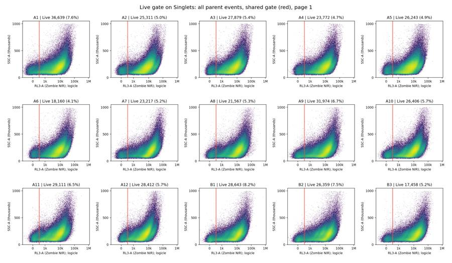
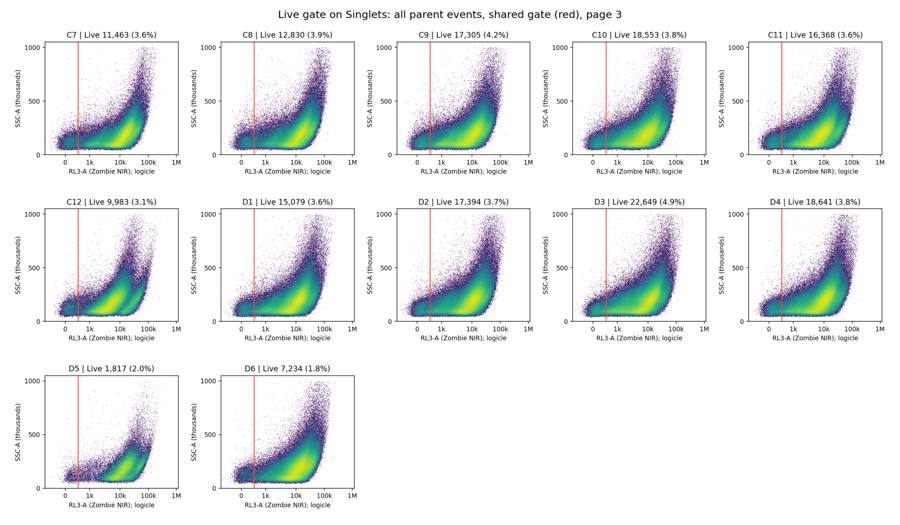
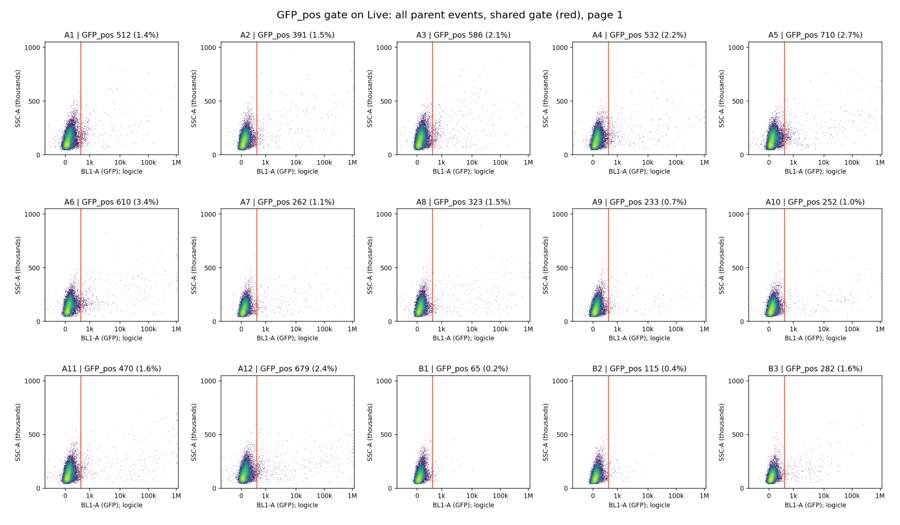
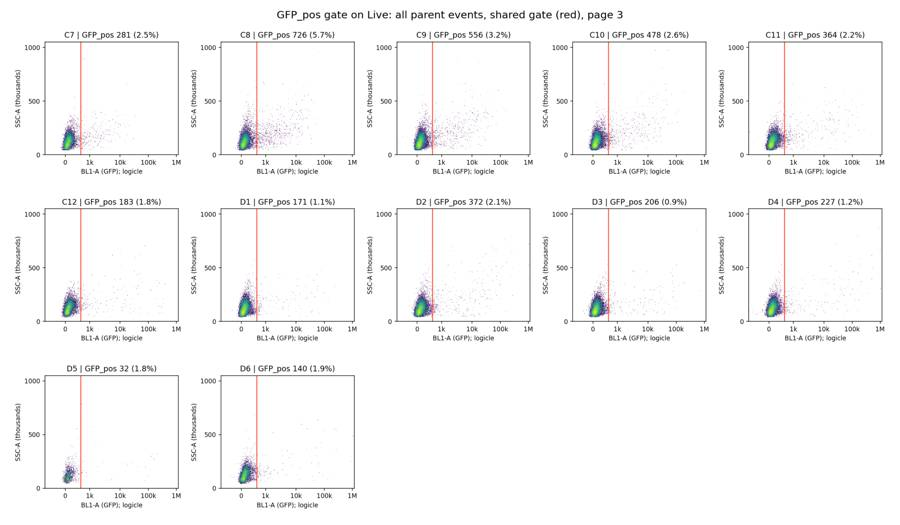
{"chunk_id":"4c3179","wall_time_seconds":0.797311465,"exit_code":0,"original_token_count":89,"output":"counts rows: 168 flags rows: 42 usable: 37 unusable: 5\nGate tree: root\n╰── Cells\n ╰── Singlets\n ╰── Live\n ╰── GFP_pos\nFiles in outputs root: plot_plate.py, flags.csv, gate_plate.py, report_qc.py, inspect_time_resets.py, notes.md, counts.csv, gates.xml, reproduce.sh\nPNG plots: 19\nTotal output size (MiB): 16.85\n"}37
agent
Validation passed: 168 count rows, 42 QC rows, and identical event memberships after reloading the saved gates. The reports mark 37 wells usable and five unusable. The gate rationale, numerical QC evidence, PNG plots and reproduction scripts are all saved in `/task/outputs/`.
tool call · exec
text(await tools.write_stdin({session_id:46337,chars:"","yield_time_ms":1000,"max_output_tokens":1000}))
text(await tools.exec_command({cmd:"python - <<'PY'\nfrom pathlib import Path\nimport pandas as pd\nout=Path('/task/outputs')\nf=pd.read_csv(out/'flags.csv')\nprint(f[f.usable=='no'][['well','reason_category']].to_string(index=False))\nfor filename in ['counts.csv','flags.csv','notes.md','gates.xml']:\n p=out/filename\n assert p.is_file() and p.stat().st_size>0\n print(filename,p.stat().st_size,'bytes')\nPY","max_output_tokens":1500}))
tool output
Script completed
Wall time 0.3 seconds
Output:
{"chunk_id":"3351e4","wall_time_seconds":0.000002494,"exit_code":0,"original_token_count":0,"output":""}
{"chunk_id":"2bb70e","wall_time_seconds":0.121682817,"exit_code":0,"original_token_count":67,"output":"well reason_category\n B7 clog_or_interrupted_flow\n B8 clog_or_interrupted_flow\n C6 other\n C11 other\n D4 other\ncounts.csv 13049 bytes\nflags.csv 17434 bytes\nnotes.md 3424 bytes\ngates.xml 4217 bytes\n"}38
agent
Completed all 42 wells.
- [counts.csv](/task/outputs/counts.csv): 168 population rows.
- [flags.csv](/task/outputs/flags.csv): 37 usable; B7 and B8 excluded for flow instability, C6, C11 and D4 for timestamp resets.
- [notes.md](/task/outputs/notes.md): gate placement and QC rationale.
- [gates.xml](/task/outputs/gates.xml): shared strategy, reloaded and verified to reproduce all counts.
PNG plots and reproduction scripts are also saved in `/task/outputs/`.